4 Visualización estática de datos
Fecha última actualización: 2026-09-01
Instalación y carga de librerías
# Se instalan automáticamente si no están disponibles en el sistema
if (!require(Polychrome)) install.packages('Polychrome')
library(Polychrome) # paletas divergentes distinguibles
if (!require(wordcloud)) install.packages('wordcloud')
library(wordcloud) # nubes de palabras
if (!require(RColorBrewer)) install.packages('RColorBrewer')
library(RColorBrewer)# paletas de colores predefinidas
if (!require(GGally)) install.packages('GGally')
library(GGally) # matrices de gráficos (ggpairs)
if (!require(openxlsx)) install.packages('openxlsx')
library(openxlsx) # lectura/escritura de Excel
if (!require(pxR)) install.packages('pxR')
library(pxR) # lectura de ficheros PC-Axis
if (!require(patchwork)) install.packages('patchwork')
library(patchwork) # combinar varios ggplot
if (!require(ggrepel)) install.packages('ggrepel')
library(ggrepel) # etiquetas sin solapamientos
if (!require(gt)) install.packages('gt')
library(gt) # tablas estáticas de publicación
if (!require(ggplot2)) install.packages('ggplot2')
library(ggplot2) # gramática de gráficos
if (!require(tidyverse)) install.packages('tidyverse')
library(tidyverse) # manipulación y visualización de datos
source("../utilidades.R") # funciones auxiliares del cursoowid_country <- read.xlsx("https://ctim.es/AEDV/data/owid_country.xlsx",sheet=1) |> # países OWID
as_tibble() # convertimos a tibbleLibrerías utilizadas en este capítulo
ggplot2: la herramienta central del capítulo. Implementa la gramática de los gráficos, el sistema por capas que se explica a continuación. Se carga también dentro detidyverse, el ecosistema de manipulación y visualización que usamos en todo el curso.patchwork: composición de varios gráficos deggplot2en una sola figura, combinándolos con los operadores+y/.ggrepel: etiquetas de texto que se apartan solas para no solaparse entre sí ni con los puntos.GGally: extensión deggplot2con gráficos compuestos, como las matrices de gráficos de pares (ggpairs).RColorBrewer: paletas de colores diseñadas para cartografía y visualización.Polychrome: generación de paletas divergentes cuando hacen falta más colores de los que ofreceRColorBrewer, buscando que sean lo más distinguibles posible entre sí.wordcloud: nubes de palabras a partir de frecuencias de texto.gt: tablas estáticas con calidad de publicación.openxlsxypxR: lectura de los datos de los ejemplos, en formato Excel y PC-Axis respectivamente, como se vio en el capítulo anterior.
En este curso se concede gran importancia a la visualización de datos. En este capítulo se presenta la visualización estática, que corresponde al tipo habitual de gráfico donde el usuario no interacciona con la representación. Como se verá, con muy pocas líneas de código es posible crear gráficos complejos y visualmente atractivos gracias a una estructura común e independiente del tipo de contenido: la denominada gramática de los gráficos, que se introduce a continuación.
4.1 La gramática de los gráficos
La visualización de una colección variada de datos interrelacionados requiere organizar con claridad los distintos elementos que componen un gráfico. Para facilitar esta tarea se define una gramática (véase [Wil05], [Wi10]) en la que un gráfico es el resultado de combinar los siguientes elementos, organizados en capas:
Elementos de la gramática de los gráficos (ggplot2)
- La tabla de datos y la declaración de los elementos de la tabla que intervienen en el gráfico.
- Las capas con los atributos geométricos: histogramas, diagramas de caja, gráficos de líneas, estadísticos, ajustes de posición, etc.
- Una escala por cada objeto geométrico incluido. La escala incluye el rango de valores utilizados y posibles transformaciones previas de los datos (por ejemplo, aplicar un logaritmo).
- Un sistema de coordenadas. El más habitual, y el que se usa por defecto, es el cartesiano (ejes ortogonales X e Y), pero puede haber otros como, por ejemplo, el polar (gráficos circulares).
- Especificaciones sobre la inclusión de múltiples gráficos (
facets) combinando subconjuntos de los datos. - Opciones de formato y diseño de la salida.
Esta organización constituye una abstracción del proceso de creación gráfica que resulta muy potente: permite generar, con un código compacto y uniforme, todo tipo de gráficos complejos. La librería que implementa esta gramática en R es ggplot2, y su función principal ggplot. Como referencia rápida puede consultarse la ficha resumen de visualización de datos.
Guía de selección de gráficos
Antes de empezar a crear gráficos, es importante saber elegir el tipo de gráfico adecuado en función de la pregunta que queremos responder con los datos y de cuántos datos tenemos: algunos gráficos, como el circular, solo son legibles con pocas categorías, mientras que otros, como el histograma o el diagrama de cajas, están pensados precisamente para resumir un volumen grande de datos. La siguiente tabla sirve como guía de referencia:
| ¿Qué quieres mostrar? | Gráfico recomendado | Volumen de datos | Función ggplot |
|---|---|---|---|
| Comparar cantidades entre categorías | Barras, barras agrupadas | Pequeño (pocas categorías) | geom_col, geom_bar |
| Proporción de un todo | Circular (pie), donuts | Pequeño (pocas categorías) | geom_col + coord_polar |
| Distribución de una variable | Histograma, densidad | Grande | geom_histogram, geom_density |
| Comparar distribuciones entre grupos | Boxplot, violín | Grande | geom_boxplot, geom_violin |
| Relación entre 2 variables numéricas | Dispersión (scatter) | Grande | geom_point, geom_smooth |
| Evolución temporal | Líneas, áreas | Grande | geom_line, geom_area |
| Valores en formato tabla con color | Mapa de calor (heatmap) | Pequeño (los que quepan en una tabla) | geom_tile |
| Comparar múltiples variables a la vez | ggpairs | pocas variables | ggpairs (GGally) |
4.2 Anatomía de un ggplot: construcción por capas
Antes de recorrer los distintos tipos de gráfico, conviene ver cómo se construye un ggplot capa a capa, ya que todos los ejemplos posteriores siguen el mismo patrón. Partimos de los datos y vamos añadiendo elementos con el operador +: primero la declaración de la tabla y las variables (aes), después el objeto geométrico (geom_*), luego las escalas (scale_*) y, finalmente, los títulos y el tema. La siguiente figura muestra las cuatro etapas sobre un mismo gráfico:
# capa 1: datos + aes
p1 <- owid_country |>
ggplot(aes(x = gdp_per_capit, y = life_expectancy)) +
labs(title = "1. Datos + aes")
# capa 2: + geom_point
p2 <- p1 +
geom_point(color = "steelblue") +
labs(title = "2. + geom_point")
# capa 3: + escala log
p3 <- p2 +
scale_x_continuous(transform = 'log2') +
labs(title = "3. + scale (log)")
# capa 4: + títulos y tema
p4 <- p3 +
labs(title = "4. + títulos y tema",
x = "PIB per cápita (log)", y = "Esperanza de vida") +
theme_bw()
wrap_plots(p1, p2, p3, p4, ncol = 2, nrow = 2) # combinamos las 4 capas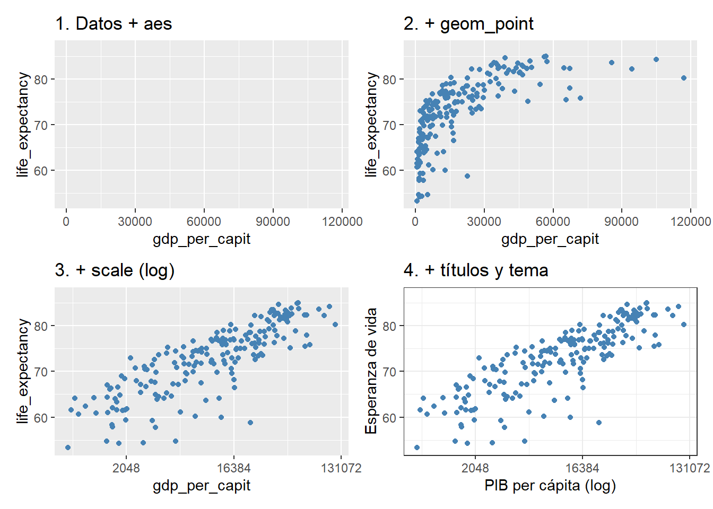
Figure 4.1: Construcción de un gráfico por capas: (1) lienzo con aes, (2) + geom_point, (3) + escala logarítmica, (4) + títulos y tema
Este esquema mental —datos → aes → geom → scale → theme/labs— es la clave para leer y escribir cualquier gráfico de ggplot2.
4.3 Diagramas de barras
A continuación se construye, usando ggplot, un diagrama de barras con la población mundial organizada por continentes. El gráfico se genera mediante la llamada a ggplot y la adición de una única capa producida por geom_col. Para añadir capas nuevas al gráfico se utiliza el operador +.
geom_col() frente a geom_bar(stat = "identity")
Cuando ya tenemos los valores calculados (por ejemplo tras un summarise), usamos geom_col() que toma los valores directamente del tibble. Es equivalente a geom_bar(stat = "identity") pero más conciso. En cambio, geom_bar() sin argumentos cuenta automáticamente las ocurrencias de cada categoría, lo cual es útil cuando queremos contar cuántos registros hay por grupo sin hacer un summarise previo.
owid_country |> # países OWID
group_by(continent) |> # agrupamos por continente
summarise(population=sum(population)) |> # sumamos población
ggplot(aes(x=continent,y=population,fill=continent)) + # color por continente
geom_col() + # barras
theme(legend.position = "none") # sin leyenda
Figure 4.2: Diagrama de barras usando geom_col
la instrucción fill=continent se utiliza para asignar colores de forma automática
a las barras. Al final del capítulo se verán en detalle estas cuestiones de diseño.
Sobre la leyenda
Por defecto, cuando usamos la opción fill en el aes, las barras se colorean y sale una leyenda a la derecha con información. Como regla general solo mantendremos la leyenda cuando aporta algo. En este caso la leyenda consiste en la lista de continentes con colores, que no aporta nada porque los nombres de los continentes ya aparecen en el eje x. Para suprimir la leyenda usamos la instrucción theme(legend.position = "none")
Por defecto, las barras se ordenan por orden alfabético. Con frecuencia queremos que las barras nos salgan ordenadas en función del valor mostrado. Para ello podemos ordenar previamente el tibble y después convertimos la variable a factor para fijar como orden el de la tabla ordenada (al ordenar una variable factor se ordena en función del nº asignado a cada etiqueta (level) del vector, no por el nombre vinculado).
owid_country |> # países OWID
group_by(continent) |> # agrupamos por continente
summarise(population=sum(population)) |> # sumamos población
arrange(population) |> # ordenamos de menor a mayor
mutate(continent= factor(continent, levels = continent)) |> # fijamos ese orden como factor
ggplot(aes(x=continent,y=population,fill=continent)) + # color por continente
geom_col() + # barras
theme(legend.position = "none") # sin leyenda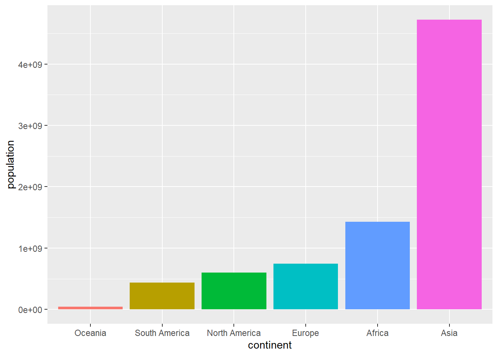
Figure 4.3: Diagrama de barras usando geom_col con orden personalizado
4.4 Diagramas de barras agrupadas
Vamos a dibujar un diagrama de barras apiladas usando la media, por continentes, del porcentaje de hombres fumadores y de mujeres fumadoras.
owid_country |> # países OWID
group_by(continent) |> # agrupamos por continente
summarise( # medias de fumadores por sexo
male=mean(na.omit(male_smokers)),
female=mean(na.omit(female_smokers))) |>
pivot_longer(male:female, names_to = "sex", values_to = "smokers") |> # pasamos a formato largo
ggplot(aes(x=continent,y=smokers,fill=sex)) + # color por sexo
geom_bar(stat = "identity") # barras apiladas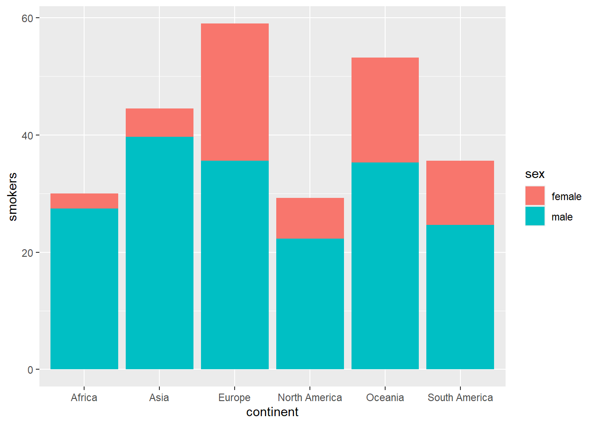
Figure 4.4: Diagrama de barras apilado usando geom_bar
A continuación haremos lo mismo pero poniendo las barras una al lado de otra con la opción position="dodge".
owid_country |> # países OWID
group_by(continent) |> # agrupamos por continente
summarise( # medias de fumadores por sexo
male=mean(na.omit(male_smokers)),
female=mean(na.omit(female_smokers))) |>
pivot_longer(male:female, names_to = "sex", values_to = "smokers") |> # pasamos a formato largo
ggplot(aes(x=continent,y=smokers,fill=sex)) + # color por sexo
geom_bar(position="dodge",stat = "identity") # barras lado a lado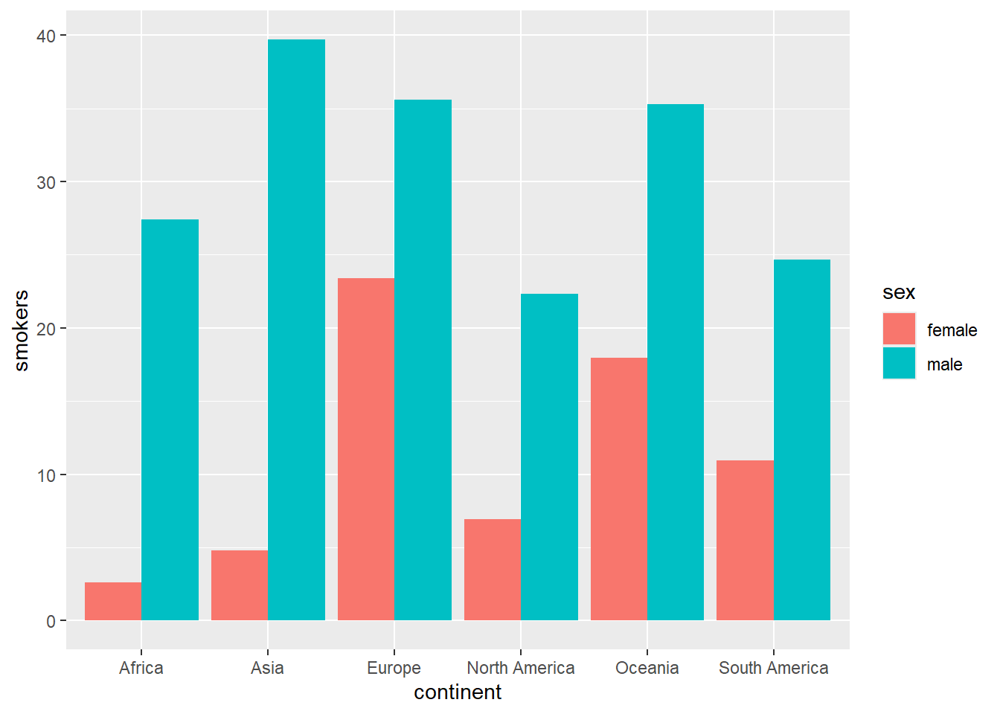
Figure 4.5: Diagrama de barras alineadas usando geom_bar
A continuación vamos a representar el mismo gráfico con barras horizontales y “en espejo”, es decir, la línea vertical central representa el nivel cero y una variable se mueve hacia la derecha y otra hacia la izquierda. Para hacer esto tenemos que usar el truco de asignar un valor negativo a la variable que queremos que salga por la izquierda. Para que los valores del eje no salgan negativos se ponen en valor absoluto con la instrucción scale_y_continuous(labels= abs).
owid_country |> # países OWID
group_by(continent) |> # agrupamos por continente
summarise( # medias de fumadores por sexo
male=mean(na.omit(male_smokers)),
female=-mean(na.omit(female_smokers))) |> # signo negativo para el lado izquierdo
pivot_longer(male:female, names_to = "sex", values_to = "smokers") |> # formato largo
ggplot(aes(x=continent,y=smokers,fill=sex)) + # color por sexo
geom_col() + # barras
coord_flip() + # giramos 90 grados
scale_y_continuous(labels= abs) # eje en valor absoluto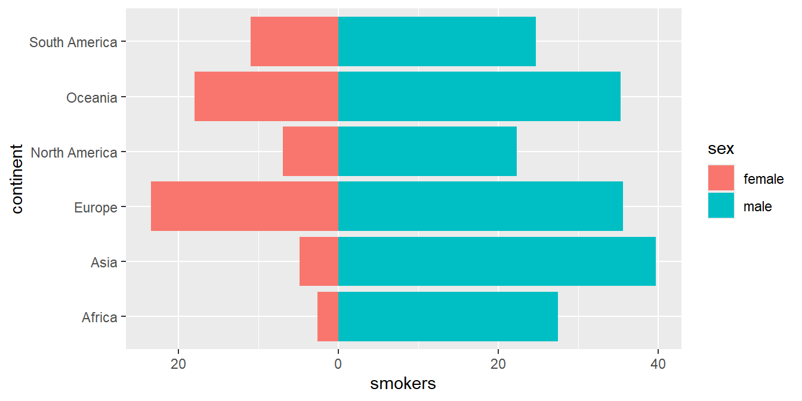
Figure 4.6: Diagrama de barras horizontal para comparar 2 variables usando geom_col
4.5 Gráficos circulares
Cuando el número de datos es pequeño, una manera eficaz de visualizar la relación entre los datos es utilizar los conocidos diagramas circulares (pie charts). En el siguiente ejemplo se muestra cómo construir uno usando la población mundial agrupada por continentes:
owid_country |> # países OWID
group_by(continent) |> # agrupamos por continente
summarise(population=sum(population)) |> # sumamos población
mutate(labels = scales::percent(population/sum(population))) |> # % de cada continente
ggplot(aes(x="",y=population,fill=continent)) + # una sola barra, sin eje x
geom_col() + # barra apilada
geom_text(aes(x=1.6,label = labels),position = position_stack(vjust = 0.5)) + # etiquetas con %
coord_polar(theta = "y") # la enrollamos en círculo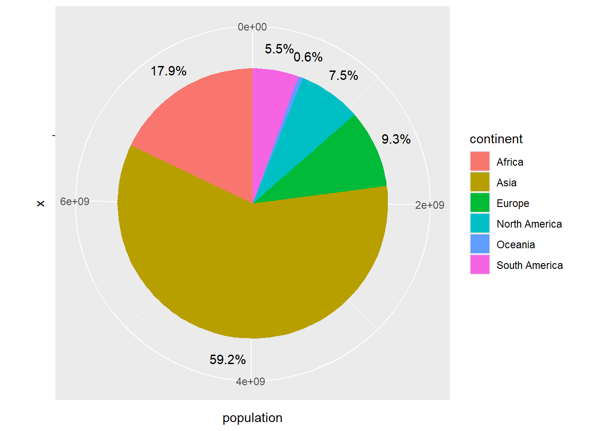
Figure 4.7: Gráfico circular usando geom_col
La función coord_polar se puede usar para transformar un gráfico de barras en un gráfico de sectores circulares. Veamos cómo queda el gráfico de barras apilado de la sección anterior al transformarlo en un gráfico de sectores circulares
owid_country |> # países OWID
group_by(continent) |> # agrupamos por continente
summarise( # medias de fumadores por sexo
male=mean(na.omit(male_smokers)),
female=mean(na.omit(female_smokers))) |>
pivot_longer(male:female, names_to = "sex", values_to = "smokers") |> # formato largo
ggplot(aes(x=continent,y=smokers,fill=sex)) + # color por sexo
geom_bar(stat = "identity",width = 1) + # barras sin huecos
coord_polar(theta = "x") # las convertimos en sectores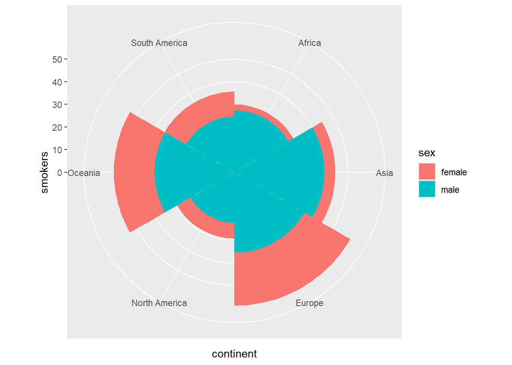
Figure 4.8: Diagrama de barras apilado transformado en sectores circulares usando coord_polar
Limitaciones de los gráficos circulares
Los estudios de percepción visual (Cleveland & McGill, 1984) muestran que el ojo humano compara longitudes con más precisión que ángulos o áreas. Por ello, los gráficos circulares son difíciles de interpretar cuando hay más de 5-6 categorías o cuando las proporciones son similares. En la mayoría de los casos, un diagrama de barras permite una comparación más precisa. Los gráficos circulares son útiles principalmente cuando se quiere resaltar que las partes suman un todo (100%) y las categorías son pocas y con proporciones claramente diferentes.
Cuando hay muchas categorías una buena idea es agregar los valores más pequeños en un solo valor (que podemos llamar “Otros”), usando, por ejemplo, el principio de Pareto. En el siguiente ejemplo aplicamos esta estrategia a las emisiones GHG por países (2024): conservamos los países que forman el 60% acumulado del total y agrupamos el resto en “Otros”:
read.xlsx('https://ctim.es/AEDV/data/EDGAR_GHG_Total_Emisiones_Paises.xlsx') |> # emisiones GHG
as_tibble() |> # convertimos a tibble
select(Country, `2024`) |> # país y emisiones de 2024
rename(GHG = `2024`) |> # renombramos la columna
mutate(pais = if_else(GHG >= aedv_pareto_value(GHG, 0.60), Country, "Otros")) |> # 60% acumulado
group_by(pais) |> # agrupamos (incluye "Otros")
summarise(GHG = sum(GHG)) |> # sumamos emisiones
mutate(porc = scales::percent(GHG / sum(GHG), accuracy = 0.1)) |> # % de cada país
ggplot(aes(x = "", y = GHG, fill = reorder(pais, -GHG))) + # color ordenado por GHG
geom_col() + # barra apilada
geom_text(aes(x = 1.6, label = porc), position = position_stack(vjust = 0.5), check_overlap = TRUE) + # etiquetas
coord_polar(theta = "y") + # la enrollamos en círculo
labs(fill = "País") + # título leyenda
theme_void() # sin ejes ni fondo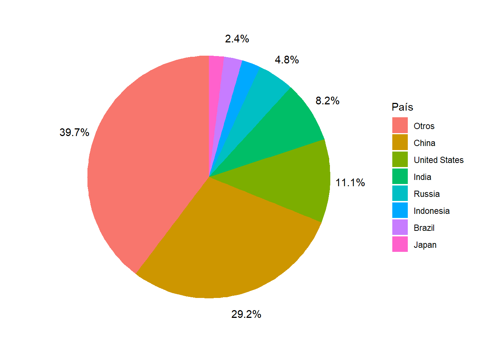
Figure 4.9: Gráfico circular de emisiones GHG (2024). Los países que no alcanzan el 60% acumulado se agrupan en ‘Otros’ (principio de Pareto). Fuente: EDGAR.
4.6 Gráficos de donuts
Los gráficos de donuts son muy parecidos a los circulares dejando un hueco circular dentro del gráfico. Utilizaremos la variable hsize para fijar el tamaño del agujero.
hsize <- 2 # radio del anillo (tamaño del agujero)
owid_country |> # países OWID
group_by(continent) |> # agrupamos por continente
summarise(population=sum(population)) |> # sumamos población
mutate(labels = scales::percent(population/sum(population))) |> # % de cada continente
ggplot(aes(x=hsize,y=population,fill=continent)) + # barra a distancia hsize del centro
geom_col() + # barra apilada
geom_text(aes(x=hsize + 0.1,label = labels),position = position_stack(vjust = 0.5)) + # etiquetas
coord_polar(theta = "y") + # la enrollamos en círculo
xlim(c(0.2, hsize + 0.5)) # deja el hueco central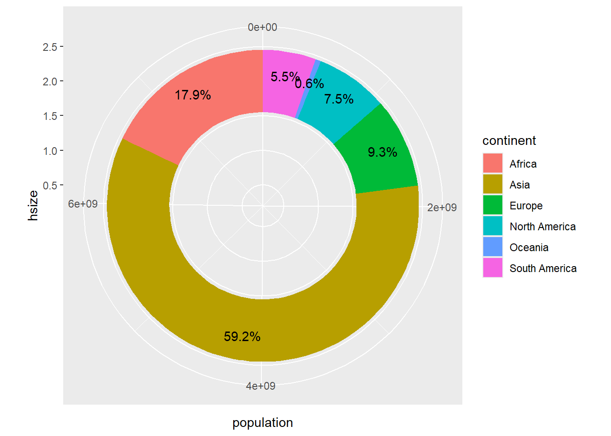
Figure 4.10: Gráfico de donuts usando geom_col
4.7 Histogramas
Vamos, a continuación, a dibujar un histograma del PIB por habitante en los diferentes países del mundo usando ggplot.
owid_country |> # países OWID
ggplot(aes(x=gdp_per_capit)) + # PIB per cápita en el eje x
geom_histogram() # histograma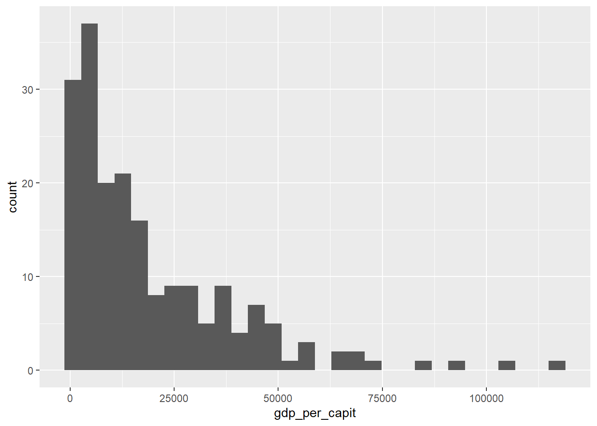
Figure 4.11: Gráfico de histograma usando geom_histogram()
A continuación haremos lo mismo pero ajustando el histograma a una función de densidad de probabilidad.
owid_country |> # países OWID
ggplot(aes(x=gdp_per_capit)) + # PIB per cápita en el eje x
geom_histogram(aes(y=after_stat(density))) + # histograma normalizado a densidad
geom_density(alpha=0.6) # curva de densidad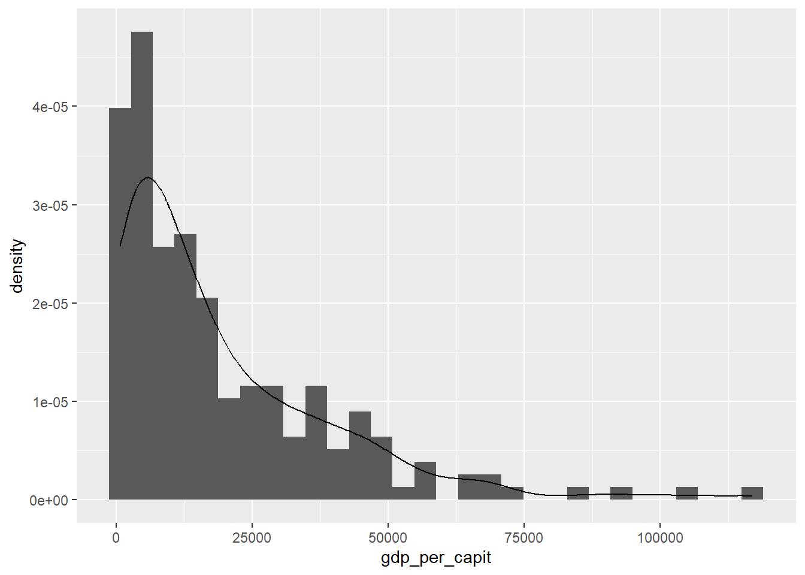
Figure 4.12: Histograma y función de densidad con geom_histogram y geom_density
A continuación presentamos el histograma organizado por continentes usando facet_wrap:
owid_country |> # países OWID
ggplot(aes(x=gdp_per_capit)) + # PIB per cápita en el eje x
geom_histogram() + # histograma
facet_wrap(~continent,scales = "free_y") # un panel por continente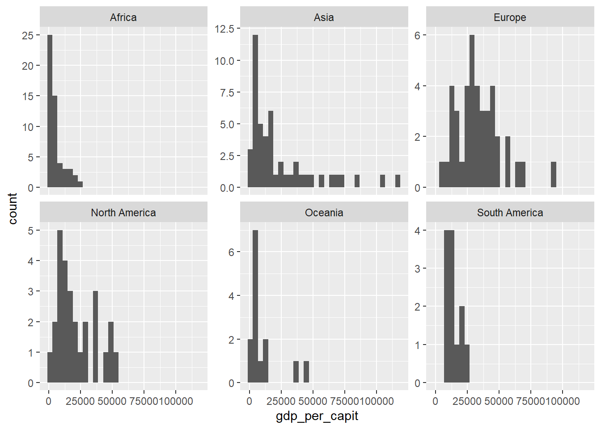
Figure 4.13: Dibujo de una cuadrícula con los histogramas de gdp_per_capit organizados por continentes usando facet_wrap
El uso de facet_wrap es una herramienta muy potente para separar las gráficas en función de una variable, es como si se crearán grupos dentro del dataset y se hiciera un gráfico distinto por cada grupo. Además, aquí, la opción scales = "free_y" permite que para cada gráfica el eje libre se escale libremente.
Por último dibujamos el histograma de la población por países. Como esta variable varía mucho entre los países usamos una escala logarítmica en los ejes. Añadimos además unas líneas verticales con la posición de la media y los percentiles 0.25, 0.5 (la mediana) y 0.75.
owid_country |> # países OWID
ggplot(aes(x=population)) + # población en el eje x
geom_histogram() + # histograma
scale_y_continuous(transform = 'log2') + # eje y logarítmico
scale_x_continuous(transform = 'log2') + # eje x logarítmico
geom_vline(aes(xintercept=mean(population)),linetype="dashed") + # línea en la media
geom_vline(aes(xintercept=quantile(population,0.25)),linetype="solid") + # percentil 25
geom_vline(aes(xintercept=quantile(population,0.5)),linetype="solid") + # mediana
geom_vline(aes(xintercept=quantile(population,0.75)),linetype="solid") # percentil 75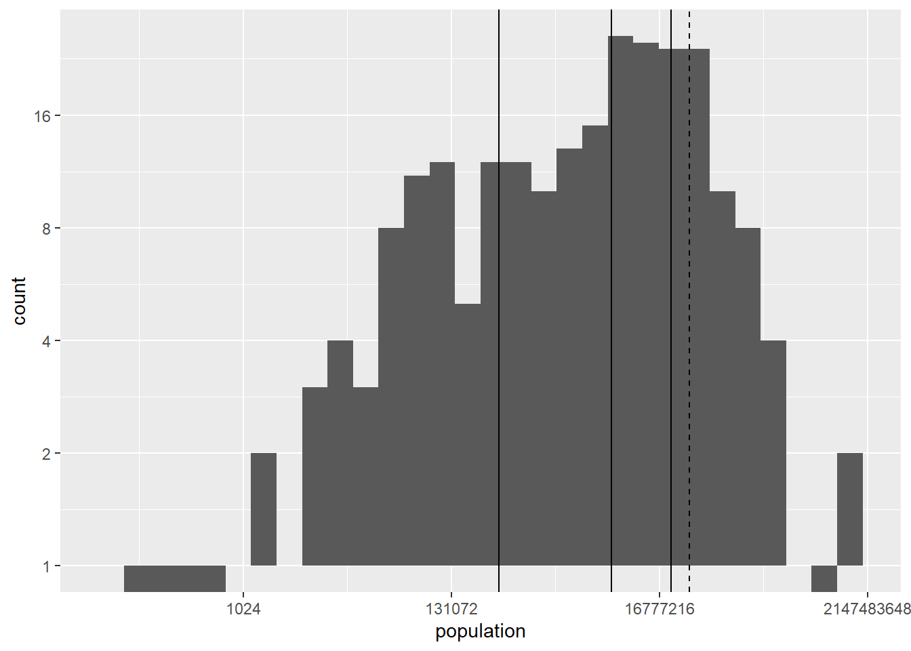
Figure 4.14: Histograma usando una escala logarítmica para los ejes incluyendo líneas verticales en la posición de la media y percentiles principales usando geom_vline
4.8 Diagramas de cajas (box-plots)
Los diagramas de cajas son una herramienta muy potente para ilustrar la diferencia entre diferentes distribuciones. Los diagramas de cajas verticales contienen la siguiente información
\(Q_1\) : la base del rectángulo corresponde al cuartil 1 (percentil 25%).
\(Q_2\) : la línea central del rectángulo corresponde al cuartil 2 (percentil 50%, la mediana).
\(Q_3\) : la altura del rectángulo corresponde al cuartil 3 (percentil 75%).
Para dibujar las líneas por arriba y debajo se utiliza el valor \(IQR=Q_3-Q_1\).
La línea inferior se sitúa en el dato más pequeño que no baja de \(Q_1 - 1.5IQR\).
La línea superior se sitúa en el dato más grande que no supera \(Q_3 + 1.5IQR\).
Además se dibujan, en forma de puntos, los valores de los datos que quedan por debajo y por encima del box-plot. Estos valores se consideran “outliers” (valores fuera del rango esperado).
owid_country |> # países OWID
ggplot(aes(x=continent,y=gdp_per_capit,fill=continent)) + # PIB por continente
geom_boxplot() + # cajas
theme(legend.position = "none") # sin leyenda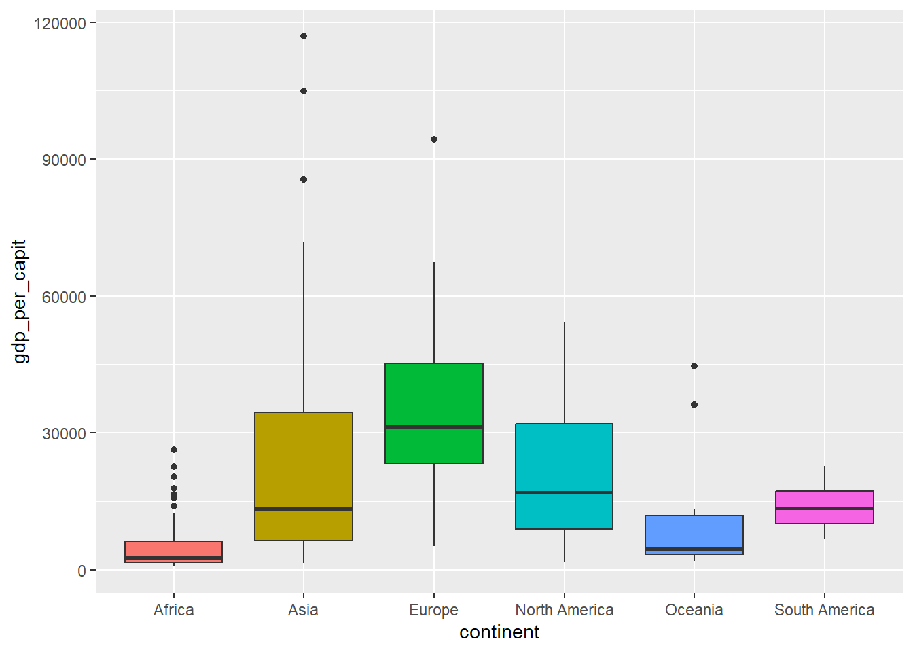
Figure 4.15: Diagrama de cajas usando geom_boxplot
Cuando el conjunto de valores no es muy grande se suelen dibujar los valores en forma de puntos para ilustrar mejor la distribución
owid_country |> # países OWID
ggplot(aes(x=continent,y=gdp_per_capit,fill=continent)) + # PIB por continente
geom_boxplot(outlier.shape = NA) + # cajas sin marcar outliers aparte
geom_jitter(shape=16, position=position_jitter(0.2)) + # puntos con dispersión horizontal
theme(legend.position = "none") # sin leyenda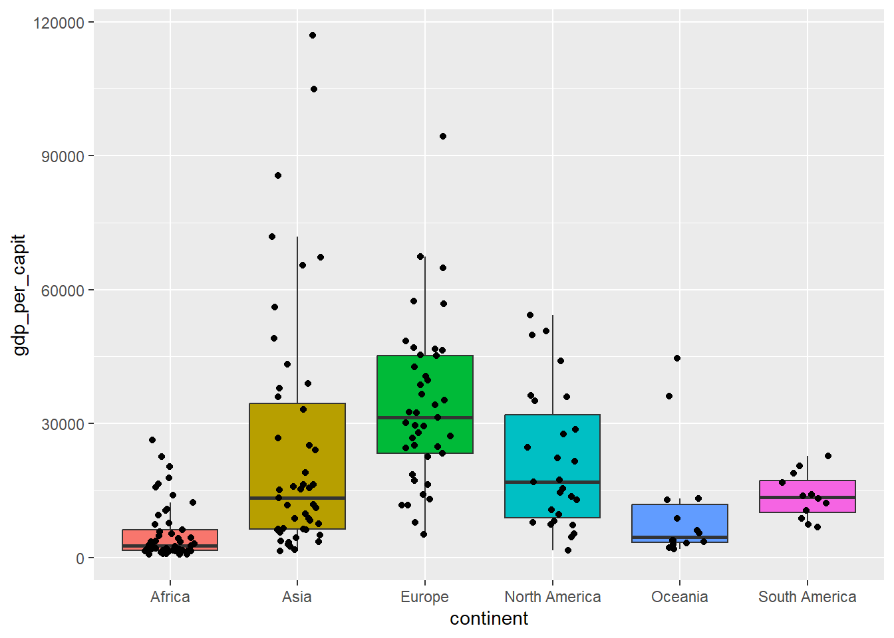
Figure 4.16: Diagrama de cajas que incluye todos los valores como puntos, usando geom_jitter
Cuando el conjunto de valores es muy grande se suelen dibujar los “box-plots” en forma de violín, donde la curva lateral (lado del violín) representa la función de densidad de la distribución.
owid_country |> # países OWID
ggplot(aes(x=continent,y=gdp_per_capit,fill=continent)) + # PIB por continente
geom_violin() + # forma de violín (densidad)
theme(legend.position = "none") # sin leyenda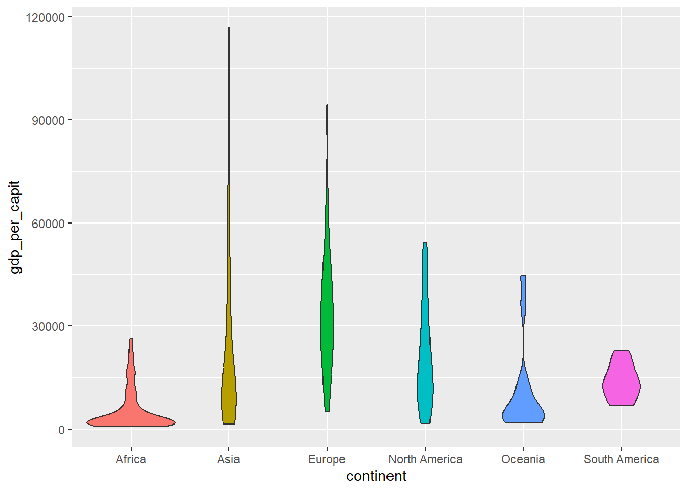
Figure 4.17: Diagrama en forma de violín usando geom_violin
4.9 Diagramas de dispersión (scatterplot)
Para comparar variables resulta muy útil visualizar, en forma de puntos, los valores de una variable frente a otra. En la siguiente figura se compara el PIB por habitante y la esperanza de vida.
owid_country |> # países OWID
ggplot(aes(x=gdp_per_capit,y=life_expectancy)) + # PIB vs. esperanza de vida
geom_point() + # puntos
scale_x_continuous(transform = 'log2') + # eje x logarítmico
geom_smooth(method = lm, se = FALSE) # recta de regresión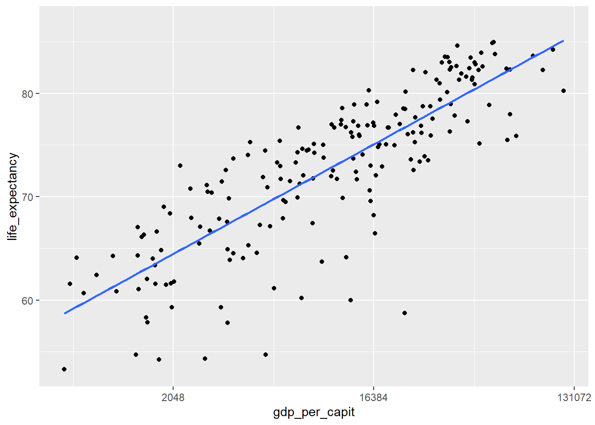
Figure 4.18: Diagrama de dispersión usando geom_point y con el eje x en escala logarítmica
En la siguiente gráfica agrupamos por continentes
owid_country |> # países OWID
ggplot(aes(x=gdp_per_capit,y=life_expectancy,color=continent)) + # color por continente
geom_point() + # puntos
scale_x_continuous(transform = 'log2') + # eje x logarítmico
geom_smooth(method = lm, se = FALSE) # una recta de regresión por continente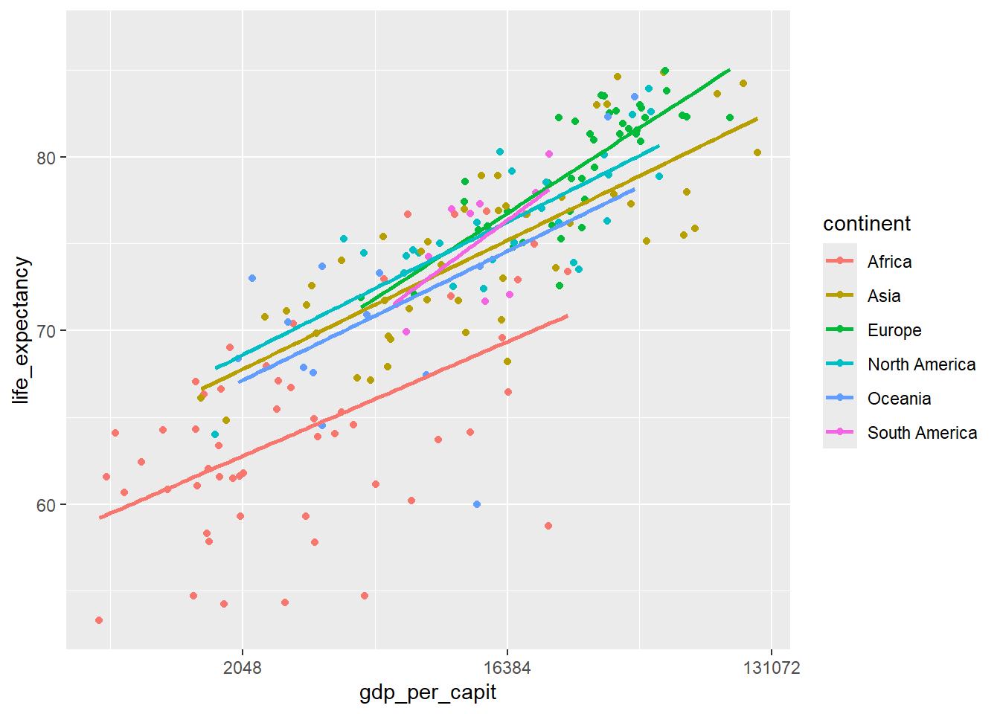
Figure 4.19: Diagrama de dispersión agrupado por continentes con rectas de regresión
4.10 ggpairs para comparar variables
La función ggpairs de la librería GGally ofrece una forma avanzada de comparar
variables. En la siguiente figura se muestra un ejemplo de su uso para comparar
3 indicadores de la tabla owid_country haciendo una comparación con todos los
datos y otra comparación agrupando por continentes. ggpairs genera una cuadrícula
donde en la diagonal aparecen las funciones de densidad de las distribuciones de los
valores por continentes. En la parte inferior de la cuadrícula se dibujan los diagramas
de dispersión formados por los valores de 2 indicadores y en la parte superior de
la cuadrícula se pone el valor de correlación entre cada par de indicadores,
cuanto más cercano sea este valor, más se aproxima a una línea la nube de puntos
de la parte inferior de la cuadrícula
owid_country |> # países OWID
select(continent, # 3 indicadores a comparar
cardiovasc_death_rat,
life_expectancy,
human_development_index) |>
ggpairs(columns = 2:4, # columnas a comparar
aes(color = continent,alpha=0.5)) # color por continente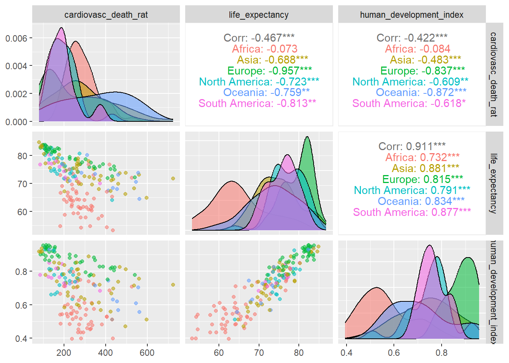
Figure 4.20: Comparación de variables usando ggpairs
4.11 Gráficos de líneas
Cuando exista en nuestra tabla una variable ordenada (por ejemplo fechas) podemos dibujar curvas donde se muestra la evolución de otras variables respecto a la variable ordenada que se pone en el eje horizontal. Veamos un ejemplo con la evolución de fallecidos diarios en el Reino Unido por la COVID-19 usando datos suministrados por la OWID.
Sobre los ejemplos con datos de la COVID-19
Varios ejemplos de este libro usan series de la epidemia de la COVID-19. Aunque ya no son actualidad, se mantienen deliberadamente como caso histórico de interés metodológico: contienen olas bien delimitadas, eventos externos identificables (confinamientos, variantes, vacunación) y anomalías de registro; exactamente el tipo de fenómenos que un analista debe saber leer y anotar en una serie temporal.
owid_covid <- read.xlsx("https://ctim.es/AEDV/data/owid_covid.xlsx",sheet=1) |> # datos COVID
as_tibble() # convertimos a tibble
owid_covid |>
filter(iso_code=="GBR") |> # solo Reino Unido
mutate(date=as.Date(date)) |> # date a formato fecha
select(fecha=date,fallecidos=new_deaths_restored_EpiInvert) |> # fecha y fallecidos
ggplot(aes(x=fecha,y=fallecidos))+ # fallecidos en el tiempo
geom_line()+ # línea
theme_bw() # fondo blanco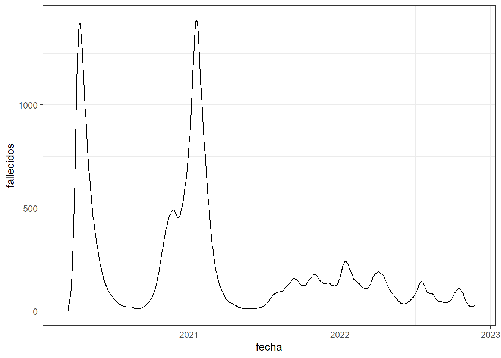
Figure 4.21: Gráfico de líneas usando geom_line
A continuación vamos a añadir a este gráfico de línea unas zonas coloreadas para identificar a las diferentes olas epidémicas
data_breaks <- tibble( # fechas de cada ola epidémica
start = as.Date(c("2020-03-23","2020-09-07","2021-05-28","2021-12-15","2022-06-24")),
end = as.Date(c("2020-05-30","2021-04-21","2021-12-14","2022-04-29","2022-08-03")),
variants =c("1. wild-type","2. Alpha","3. Delta","4. Omicron","5. Omicron")
)
owid_covid |>
filter(iso_code=="GBR") |> # solo Reino Unido
mutate(date=as.Date(date)) |> # date a formato fecha
select(fecha=date,fallecidos=new_deaths_restored_EpiInvert) |> # fecha y fallecidos
ggplot(aes(x=fecha,y=fallecidos))+ # fallecidos en el tiempo
geom_rect(data = data_breaks,aes(xmin = start,xmax = end,ymin = - Inf,ymax = Inf,fill = variants),inherit.aes = FALSE,alpha = 0.2) + # zonas de cada ola
geom_line()+ # línea
theme_bw() # fondo blanco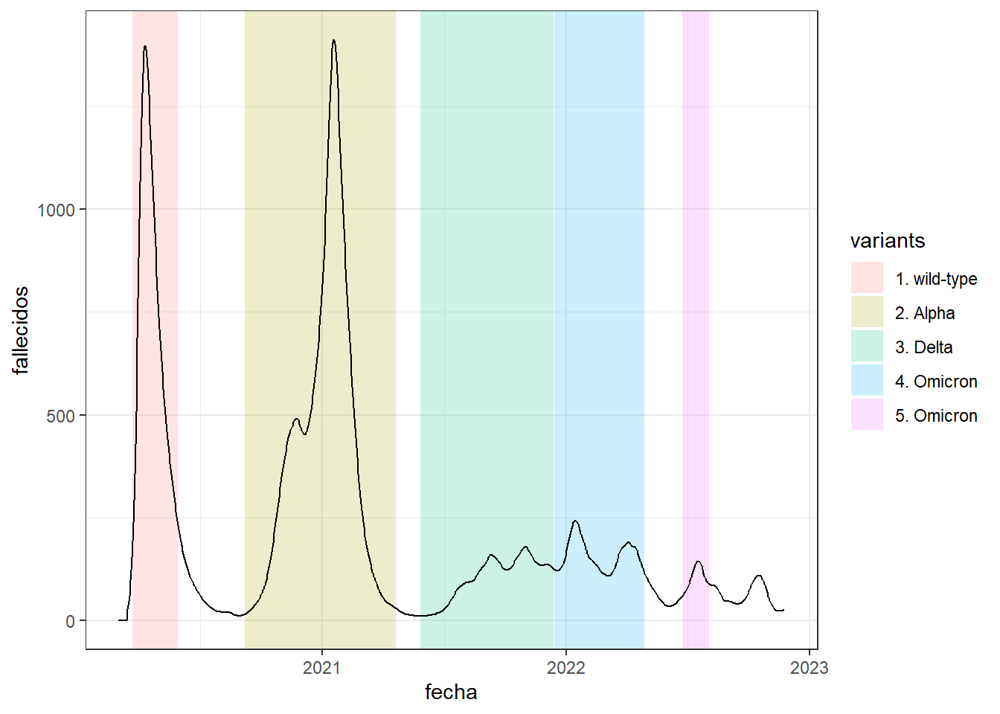
Figure 4.22: Se añade al gráfico anterior zonas coloreadas con la función geom_rect
facet_wrap vs. facet_grid
La función facet_wrap agrupa la tabla por una variable y en una cuadrícula organiza de forma separada el gráfico de cada grupo. La función facet_grid hace lo mismo pero agrupando por dos variables que además determinan los ejes de la cuadrícula.
Veamos primero facet_wrap con los datos anuales de turistas nacionales y extranjeros por isla (ISTAC): un panel por isla (NAME) y, dentro de cada panel, las dos series de INDICATOR superpuestas con color.
readRDS(url("https://ctim.es/AEDV/data/ISTAC_TURISTAS.rds")) |> # leemos los datos
filter(nchar(TIME) == 4) |> # solo datos anuales
mutate(anyo = as.integer(TIME)) |> # año numérico
ggplot(aes(x = anyo, y = VALUE, color = INDICATOR)) + # color = indicador
geom_line() + # líneas
facet_wrap(~ NAME, scales = "free_y") + # un panel por isla, escala libre
scale_y_continuous(labels = scales::label_scientific()) + # notación científica eje y
labs(x = "Año", y = "Turistas", color = "Indicador") + # etiquetas
theme(legend.position = "bottom") # leyenda abajo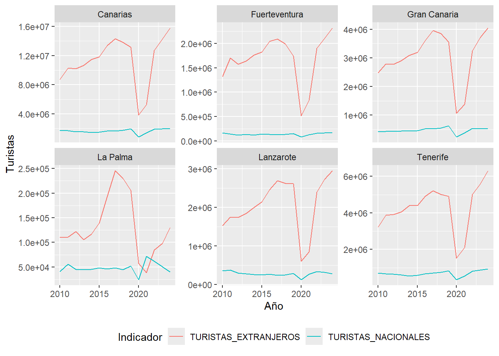
Figure 4.23: Turistas nacionales y extranjeros por isla (datos anuales) usando facet_wrap(~NAME, scales = 'free_y'), con las dos series de INDICATOR superpuestas en cada panel. Fuente: ISTAC.
Con scales = "free_y" cada uno de los 6 paneles calcula su propio rango vertical, así que se aprecia bien la evolución tanto en Canarias (más de 15 millones de turistas extranjeros al año) como en La Palma (apenas 250.000).
facet_grid permite combinar dos variables de agrupación a la vez, una por filas y otra por columnas. Repetimos el ejemplo cruzando INDICATOR (filas) y NAME (columnas):
readRDS(url("https://ctim.es/AEDV/data/ISTAC_TURISTAS.rds")) |> # leemos los datos
filter(nchar(TIME) == 4) |> # solo datos anuales
mutate(anyo = as.integer(TIME)) |> # año numérico
ggplot(aes(x = anyo, y = VALUE)) + # sin color: ya separa por panel
geom_line() + # líneas
facet_grid(INDICATOR ~ NAME, scales = "free_y") + # filas = indicador, columnas = isla
scale_y_continuous(labels = scales::label_scientific()) + # notación científica eje y
labs(x = "Año", y = "Turistas") + # etiquetas
theme(axis.text.x = element_text(angle = 45, hjust = 1)) # ticks inclinados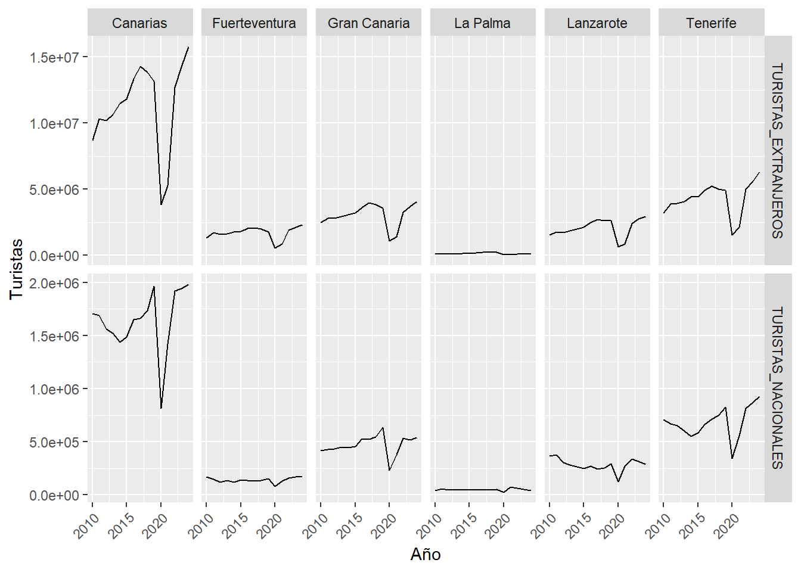
Figure 4.24: Turistas nacionales y extranjeros por isla (datos anuales), combinando INDICATOR y NAME con facet_grid y scales = 'free_y'. Fuente: ISTAC.
scales = "free_y" no funciona igual en facet_grid que en facet_wrap
En facet_grid, scales = "free_y" libera el eje por fila, no panel a panel: todas las columnas de una misma fila comparten el mismo rango vertical, porque facet_grid mantiene la cuadrícula alineada por filas y columnas. Por eso islas pequeñas como La Palma o Fuerteventura salen casi planas en el gráfico anterior —su escala real queda aplastada por la de Canarias, que comparte fila con ellas—, aunque su forma es la misma que en el facet_wrap de arriba, donde cada panel sí es independiente. Si se necesita cruzar dos variables de agrupación y, a la vez, una escala libre por panel, se le pueden pasar las dos a facet_wrap (p. ej. facet_wrap(~ INDICATOR + NAME, scales = "free_y")), a costa de perder la disposición en cuadrícula estricta de facet_grid.
Tal y como apunta la nota anterior, facet_wrap admite pasarle dos variables para agrupar. Otra forma es generar un atributo combinado con las dos variables. Para hacerlo, primero para que la etiqueta de cada panel (isla + indicador) no desborde la franja del título, la acortamos antes a mano en vez de usar el nombre completo del indicador (TURISTAS_NACIONALES/TURISTAS_EXTRANJEROS):
readRDS(url("https://ctim.es/AEDV/data/ISTAC_TURISTAS.rds")) |> # leemos los datos
filter(nchar(TIME) == 4) |> # solo datos anuales
mutate(
anyo = as.integer(TIME), # año numérico
indicador_corto = if_else(INDICATOR == "TURISTAS_NACIONALES", "Nac.", "Ext."), # versión corta
grupo = paste(NAME, indicador_corto) # isla + indicador en un solo atributo
) |>
ggplot(aes(x = anyo, y = VALUE)) +
geom_line() + # líneas
facet_wrap(~ grupo, scales = "free_y") + # un panel por combinación
scale_y_continuous(labels = scales::label_scientific()) + # notación científica eje y
labs(x = "Año", y = "Turistas") + # etiquetas
theme(axis.text.x = element_text(angle = 45, hjust = 1), # ticks inclinados
strip.text = element_text(size = 8)) # letra más pequeña en el título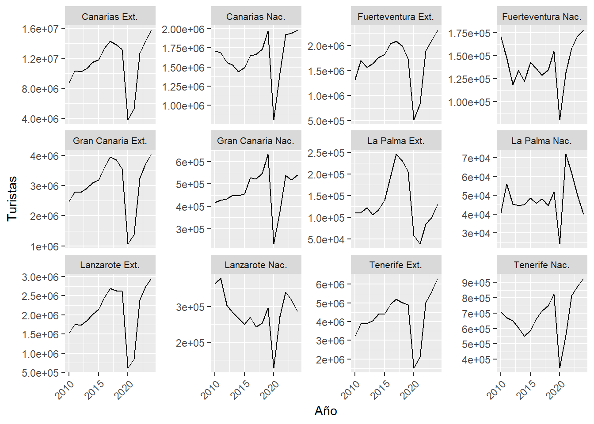
Figure 4.25: Turistas por isla e indicador (datos anuales) usando facet_wrap sobre la combinación NAME/INDICATOR, con escala libre panel a panel. Fuente: ISTAC.
4.12 Gráficos de área
El gráfico de área (geom_area) es una variante del gráfico de líneas que rellena el espacio entre la línea y el eje x. Es útil para enfatizar la magnitud acumulada de una variable. La función geom_ribbon es similar pero permite definir un límite superior e inferior, lo cual es ideal para representar intervalos de confianza o bandas de incertidumbre:
covid_fra <- owid_covid |>
filter(iso_code == "FRA") |> # solo Francia
mutate(date = as.Date(date)) |> # date a formato fecha
select(fecha = date, fallecidos = new_deaths_restored_EpiInvert) # fecha y fallecidos
covid_fra |>
ggplot(aes(x = fecha, y = fallecidos)) + # fallecidos en el tiempo
geom_area(fill = "steelblue", alpha = 0.3) + # área rellena
geom_line(color = "steelblue") + # línea encima
geom_ribbon(aes(ymin = fallecidos * 0.8, ymax = fallecidos * 1.2), # banda ±20% simulada
fill = "steelblue", alpha = 0.15) +
theme_bw() + # fondo blanco
labs(x = "Fecha", y = "Fallecidos diarios", # títulos
title = "Fallecidos diarios por COVID-19 en Francia",
subtitle = "Banda: ±20% como ejemplo de intervalo de incertidumbre")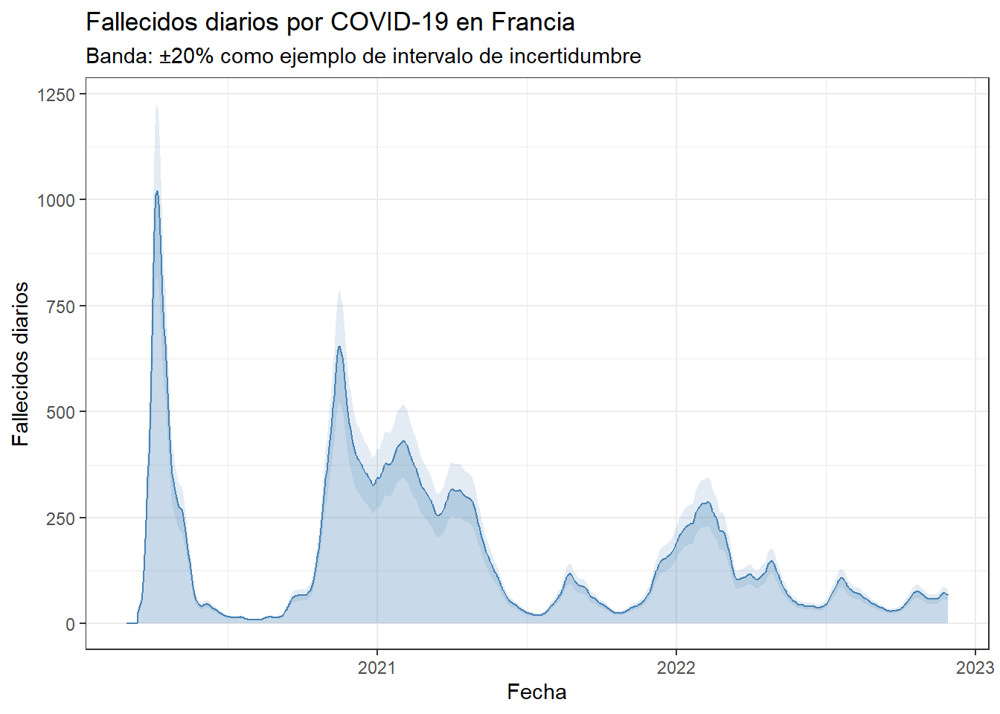
Figure 4.26: Gráfico de área con geom_area y banda de incertidumbre con geom_ribbon
4.13 Doble eje vertical
En ocasiones, queremos comparar en la misma gráfica de línea dos variables de magnitudes muy distintas, para ello usamos un doble eje vertical, uno por la izquierda y otro por la derecha. Veamos un ejemplo comparando la incidencia diaria de casos (nº de infectados registrados) y los fallecidos por la COVID-19 en Francia. Para construir este tipo de gráfico usamos la función aedv_doble_eje() del fichero utilidades.R, que reescala la segunda variable al rango de la primera para poder superponerlas y configura el eje de la derecha para que deshaga esa escala y sus valores se lean en su unidad real.
Generación del gráfico con doble eje vertical
data <- owid_covid |>
filter(iso_code=="FRA") |> # solo Francia
mutate(date=as.Date(date)) |> # date a formato fecha
select(fecha=date,fallecidos=new_deaths_restored_EpiInvert,incidencia=new_cases_restored_EpiInvert) # 3 columnas
aedv_doble_eje(data,"fecha","incidencia","red","fallecidos","blue") # eje izq. incidencia, eje der. fallecidos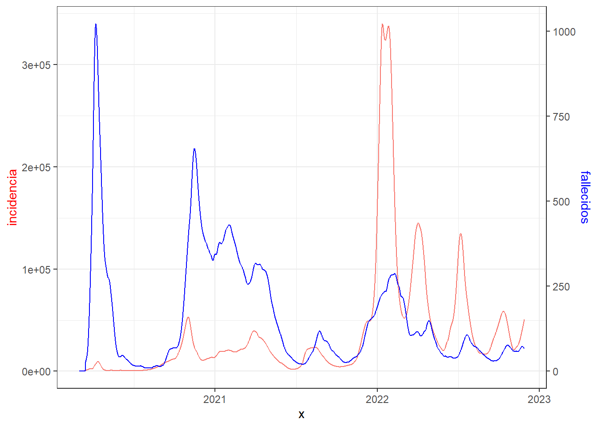
Figure 4.27: Gráfico de líneas con doble eje vertical
El doble eje vertical, con precaución
En el ejemplo anterior el doble eje funciona muy bien, porque permite observar cómo evolucionó la incidencia registrada frente a los fallecidos: se aprecian los picos de incidencia seguidos de picos de fallecimientos y cómo, según avanza la pandemia, la altura de los picos de fallecimientos disminuye mucho respecto a la de incidencia.
Sin embargo, en general, este tipo de gráfico puede resultar engañoso. Al poder elegir libremente la escala de cada eje, dos series pueden parecer relacionadas sin estarlo: basta con estirar o encoger uno de los ejes para que las curvas se superpongan o se separen a voluntad. Por eso conviene conocer las dos alternativas habituales para comparar dos series de magnitudes distintas:
- Normalizar ambas variables a una escala común (por ejemplo, dividiendo cada una por su máximo) y dibujarlas con un solo eje vertical. Se pierde el valor real de las variables, pero la comparación de las formas es honesta.
- Dibujar las dos series en gráficos separados y apilados, uno encima del otro compartiendo el eje temporal (con el operador
/depatchwork, que veremos en la sección de combinación de gráficos). La comparación resulta menos inmediata, pero cada serie conserva su escala real.
4.14 Anotaciones y etiquetas en los gráficos
annotate para añadir texto y flechas
Veamos cómo añadir texto al gráfico de fallecimientos en Francia para señalar cuándo se produce el máximo diario de fallecimientos:
tb <- owid_covid |>
filter(iso_code=="FRA" & date<"2021-12-30") |> # solo Francia, hasta dic. 2021
mutate(date=as.Date(date)) |> # date a formato fecha
select(fecha=date,fallecidos=new_deaths_restored_EpiInvert) # fecha y fallecidos
yl <- max(tb$fallecidos) # máximo de fallecidos diarios
xl <- tb$fecha[which(tb$fallecidos==yl)] # fecha en que se alcanza
tb |>
ggplot(aes(x=fecha,y=fallecidos))+ # fallecidos en el tiempo
geom_line()+ # línea
theme_bw()+ # fondo blanco
annotate(geom="label",x=xl+40,y=yl-20,hjust="left", # etiqueta desplazada del máximo
label=paste(yl," fue el máximo de fallecidos diarios\n",
"y se alcanzó el ",xl))+
annotate( # flecha desde la etiqueta hasta el máximo
geom="segment",x=xl+40,y=yl-20,xend=xl,yend=yl,linewidth=0.5,
arrow=arrow(length=unit(2,"mm"),angle=25,type="closed")
)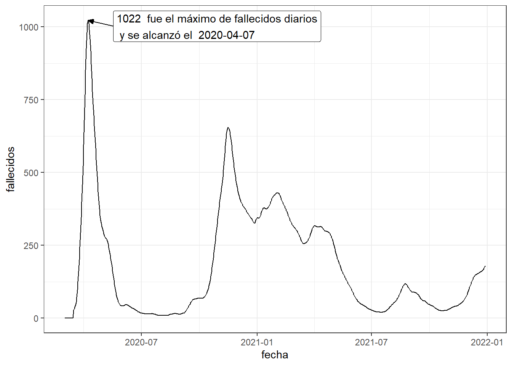
Figure 4.28: Gráfico de líneas con anotaciones
geom_text y geom_label para etiquetar puntos
Las funciones geom_text y geom_label permiten añadir etiquetas de texto directamente sobre los puntos de un gráfico. La diferencia es que geom_label dibuja un recuadro alrededor del texto. Son especialmente útiles para identificar puntos individuales en diagramas de dispersión:
owid_country |>
filter(continent == "Europe" & population > 2e7) |> # países grandes de Europa
ggplot(aes(x = gdp_per_capit, y = life_expectancy, label = location)) + # etiqueta = país
geom_point(color = "steelblue", size = 2) + # puntos
geom_text(nudge_y = 0.4, size = 3) + # etiquetas de texto
scale_x_continuous(transform = 'log2') + # eje x logarítmico
labs(x = "PIB per cápita (escala log)", y = "Esperanza de vida") # títulos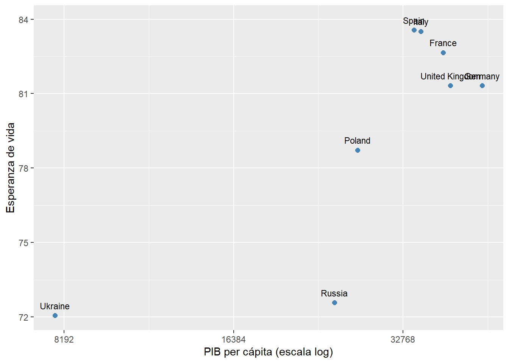
Figure 4.29: Diagrama de dispersión con etiquetas usando geom_text
Cuando las etiquetas se solapan entre sí, la librería ggrepel ofrece las funciones geom_text_repel y geom_label_repel que ajustan automáticamente la posición de las etiquetas para evitar solapamientos:
owid_country |>
filter(continent == "Europe" & population > 1e7) |> # países grandes de Europa
ggplot(aes(x = gdp_per_capit, y = life_expectancy, label = location)) + # etiqueta = país
geom_point(color = "steelblue", size = 2) + # puntos
geom_text_repel(size = 2.8, max.overlaps = 20) + # etiquetas sin solaparse
scale_x_continuous(transform = 'log2') + # eje x logarítmico
labs(x = "PIB per cápita (escala log)", y = "Esperanza de vida") # títulos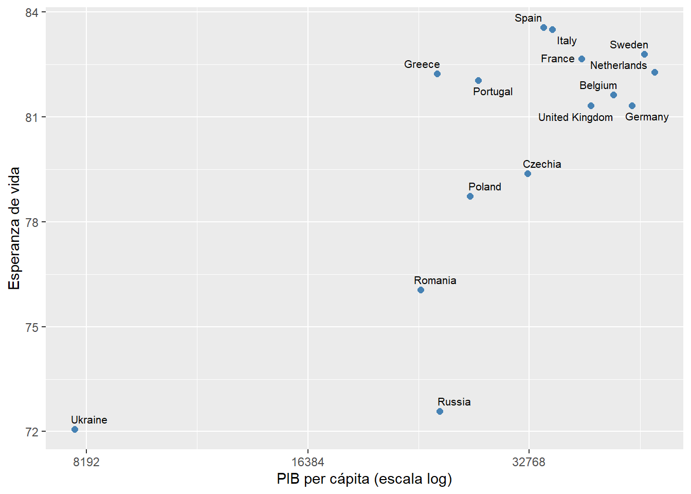
Figure 4.30: Etiquetas sin solapamiento usando geom_text_repel de la librería ggrepel
Estos datos que acabamos de mostrar sobre la COVID-19 son casos particulares de series temporales donde tenemos datos que van variando con el tiempo. En el próximo tema estudiaremos más en detalle las series temporales.
4.15 Combinando gráficos
Cada gráfico que genera ggplot se puede manejar como un objeto que posteriormente
se puede combinar con otros gráficos. Para combinar gráficos utilizaremos la librería
patchwork. Veamos un ejemplo combinando gráficos que comparan diferentes variables
del tibble owid_country
p1 <- owid_country |> # PIB vs. esperanza de vida
ggplot(aes(x=gdp_per_capit,y=life_expectancy)) +
geom_point() +
scale_x_continuous(transform = 'log2')
p2 <- owid_country |> # PIB vs. lavado de manos
ggplot(aes(x=gdp_per_capit,y=handwashing_facilities)) +
geom_point() +
scale_x_continuous(transform = 'log2')
p3 <- owid_country |> # PIB vs. camas hospitalarias
ggplot(aes(x=gdp_per_capit,y=hospital_beds_per_thousand)) +
geom_point() +
scale_x_continuous(transform = 'log2')
p4 <- owid_country |> # PIB vs. índice de desarrollo humano
ggplot(aes(x=gdp_per_capit,y=human_development_index)) +
geom_point() +
scale_x_continuous(transform = 'log2')
wrap_plots(p1, p2, p3, p4, ncol = 2, nrow = 2) # cuadrícula 2x2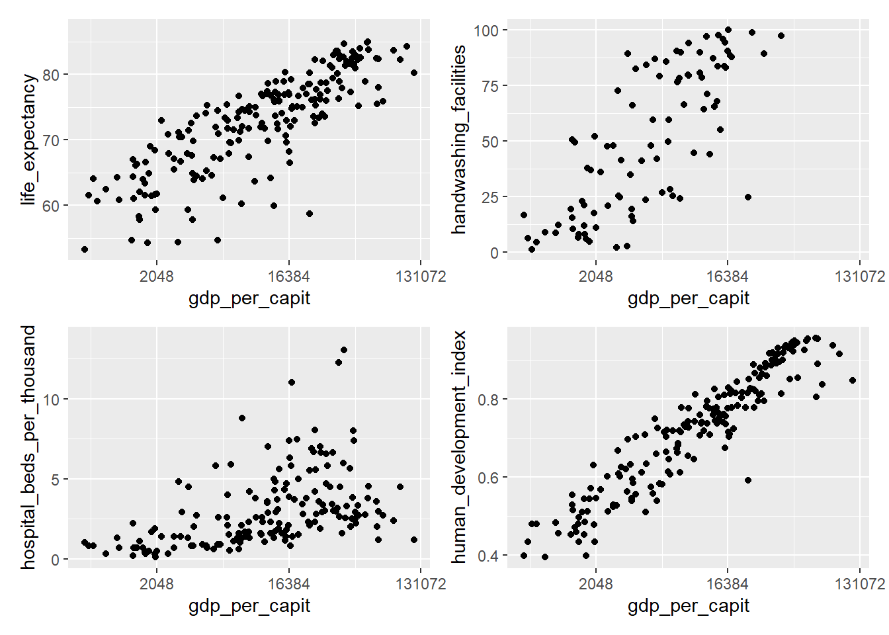
Figure 4.31: Combinación de gráficos usando wrap_plots
4.16 Mapas de calor
Un mapa de calor (Heatmap) es una tabla de valores numéricos donde las celdas tienen un color que varía de acuerdo con el valor numérico de la celda. Para ilustrar esta herramienta vamos a hacer un mapa de calor con los valores de algunos indicadores de los países de Europa almacenados en el tibble owid_country. Como en este caso los valores de los indicadores se mueven en rangos muy distintos los vamos a normalizar cada indicador (columna) dividiéndolo por su máximo. De esta manera el valor 1 corresponde al país con mayor valor y en el resto de países el valor indica la proporción del valor del país con respecto al máximo.
En las siguientes instrucciones se filtra el tibble owid_country, se seleccionan
los campos que intervienen en el mapa de calor y se normalizan
# Normalizamos cada columna numérica dividiéndola por su máximo.
# mutate(across(...)) en vez de un bucle
sel_owid_country <- owid_country |>
filter(continent=="Europe" & is.na(aged_65_older)==FALSE ) |> # países de Europa
select(location,population:gdp_per_capit,hospital_beds_per_thousand, human_development_index) |> # indicadores
mutate(across(-location, ~ round(. / max(., na.rm = TRUE), 2))) # normalizamos por el máximo cada columnaA continuación creamos el mapa de calor utilizando la paleta de colores YlOrRd. Previamente tenemos que modificar, usando pivot_longer, la organización del tibble para pasarlo al formato tidy data o largo que requiere ggplot
sel_owid_country |>
pivot_longer(population:human_development_index, names_to = "indicator", values_to = "value") |> # formato largo
ggplot(aes(indicator,location,fill=value)) + # celdas indicador x país
geom_tile(color = "lightblue", # rejilla
lwd = 0.5,
linetype = 1) +
scale_fill_gradientn(colors = brewer.pal(9, 'YlOrRd'))+ # paleta de color
theme(axis.text.x = element_text(angle = 45,hjust=1)) # ticks inclinados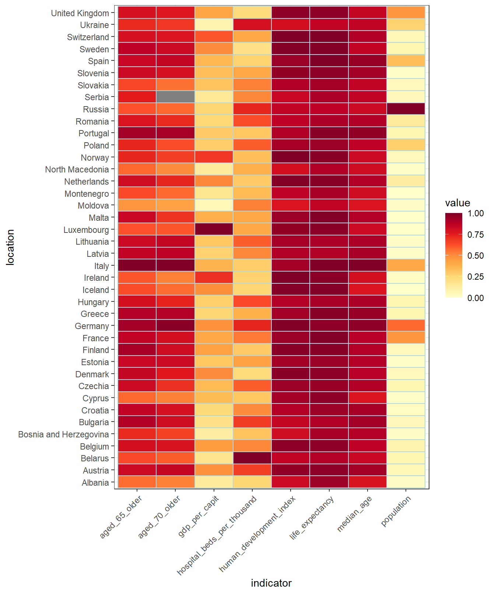
Figure 4.32: Mapa de calor, usando la paleta YlOrRd, de algunos indicadores europeos normalizados diviendo por su máximo
Vamos ahora a hacer algunos cambios: añadimos un texto a las celdas con los valores de los indicadores, previamente, escalamos los indicadores con números muy grandes o muy pequeños para que su valor quepa en la celda y les cambiamos los nombres para que reflejen el escalado. Para colorear normalizamos cada indicador entre 0 y 1 y cambiamos la paleta:
owid_country |>
filter(continent=="Europe" & is.na(aged_65_older)==FALSE ) |> # países de Europa
select(location,population:gdp_per_capit,hospital_beds_per_thousand, human_development_index) |> # indicadores
mutate(population=population/1000000) |> # población en millones
rename(`population (÷ 1000000)`=population) |> # renombramos con la unidad
mutate(gdp_per_capit=gdp_per_capit/1000) |> # PIB en miles
rename(`gdp_per_capit (÷ 1000)`=gdp_per_capit) |> # renombramos con la unidad
mutate(human_development_index=human_development_index*100) |> # IDH en escala 0-100
rename(`human_development_index (x 100)`=human_development_index) |> # renombramos con la unidad
pivot_longer(`population (÷ 1000000)`:`human_development_index (x 100)`, names_to = "indicator", values_to = "value") |> # formato largo
group_by(indicator) |> # normalizamos cada indicador por separado
mutate(norm_value = (value - min(na.omit(value))) / (max(na.omit(value)) - min(na.omit(value)))) |> # a escala 0-1
ungroup() |>
mutate(value=round(value,digits = 2)) |> # redondeamos la etiqueta
ggplot(aes(indicator,location,fill=norm_value)) + # color = valor normalizado
geom_tile(color = "grey80") + # celdas
scale_fill_gradient(low = "white", high = "steelblue") + # degradado de color
geom_text(aes(label = value), color = "black") + # valor real como etiqueta
theme(axis.text.x = element_text(angle = 45,hjust=1),legend.position = "none") # ticks inclinados, sin leyenda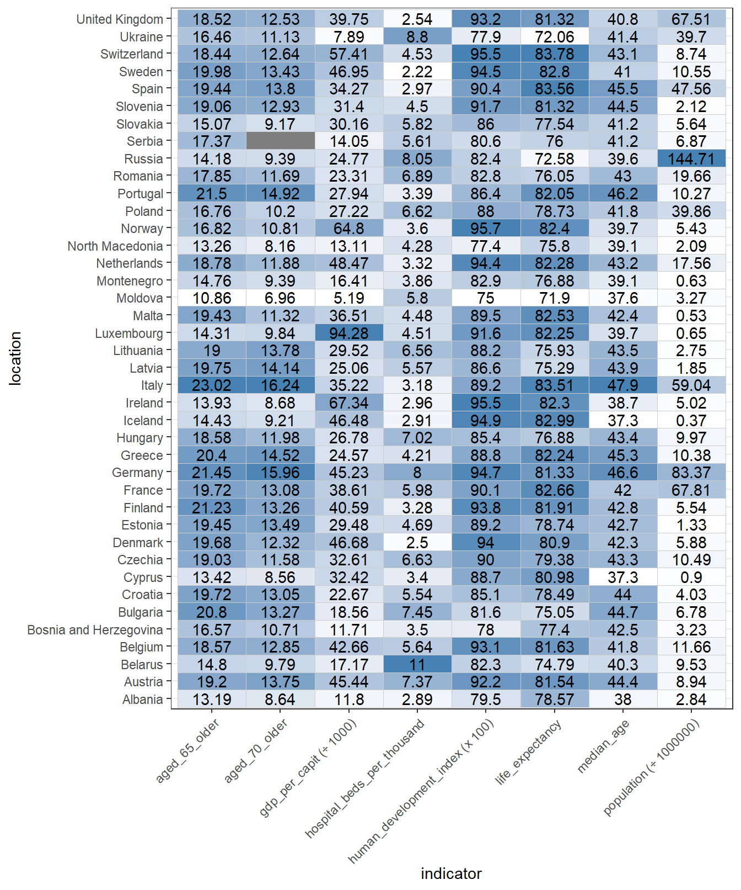
Figure 4.33: Mapa de calor similar al anterior, cambiando la paleta, normalizando para colorear y poniendo etiquetas con los valores
4.17 Wordcloud
wordcloud es una librería que permite crear atractivos gráficos combinando strings cuyo tamaño depende de una variable numérica. Veamos un ejemplo donde el tamaño de los nombres de los países europeos depende de su PIB por habitante.
wordcloud(words = sel_owid_country$location, freq = sel_owid_country$gdp_per_capit, min.freq = 0, # tamaño = PIB
max.words=200, random.order=FALSE, colors=brewer.pal(8, "Dark2")) # paleta de color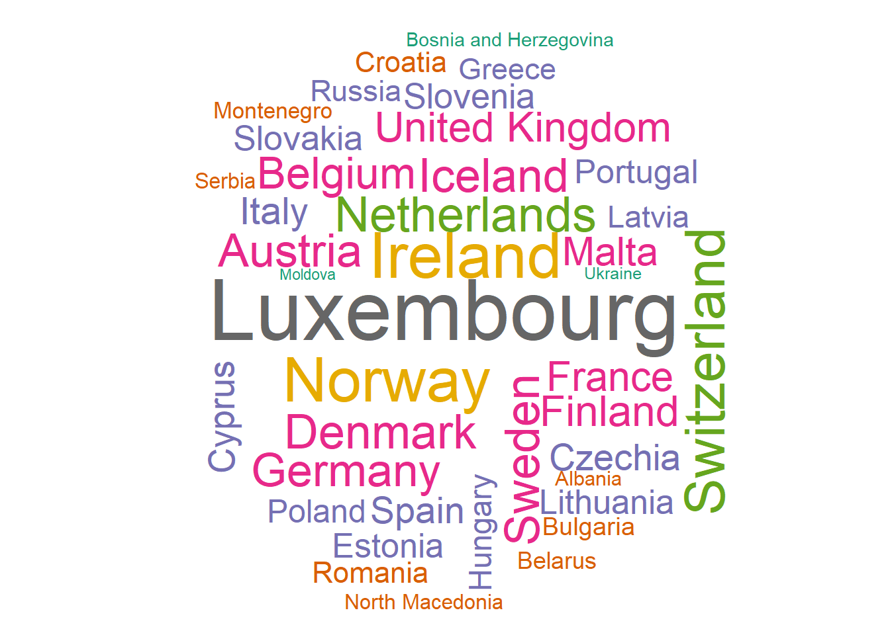
Figure 4.34: Wordcloud de los países europeos usando su PIB por habitante con la paleta de colores Dark2
Nota crítica sobre las nubes de palabras
Al igual que ocurría con los gráficos circulares, las nubes de palabras son visualmente atractivas pero poco precisas para comparar cantidades: el tamaño percibido de una palabra depende no solo del valor que codifica sino también de su longitud (un país de nombre largo parece “pesar” más), y comparar tamaños de texto es perceptualmente más difícil que comparar longitudes de barras. La literatura actual de visualización (Wilke, entre las referencias de este capítulo) las desaconseja cuando el objetivo es la comparación cuantitativa. Su uso legítimo es decorativo o de impacto (una portada, una diapositiva inicial); para comparar valores con precisión, un diagrama de barras ordenado es siempre superior.
4.18 Colores
A la hora de presentar de manera eficiente y atractiva nuestro análisis de datos, es muy importante prestar atención a los elementos de diseño estético. En las secciones finales de este capítulo veremos cuestiones relacionadas con este aspecto, empezando por la gestión de los colores. En la gran mayoría de los gráficos de ejemplos que se muestran en este libro no se incluyen estos elementos estéticos, no porque no se les considere importante, sino para simplificar la presentación y poner énfasis en las cuestiones técnicas de los elementos geométricos. Sin embargo, todos estos gráficos son estéticamente mejorables usando las herramientas que se muestran en las secciones que siguen.
Los colores son un elemento de diseño muy importante en los gráficos.
Hay varias formas diferentes de definir un color. Por ejemplo,
podemos definir un color utilizando su nombre o su código HEX. En
r-charts.com se puede encontrar una detallada lista
de colores con su nombre y código HEX. A continuación se muestra
una selección de colores con sus nombres asociados.
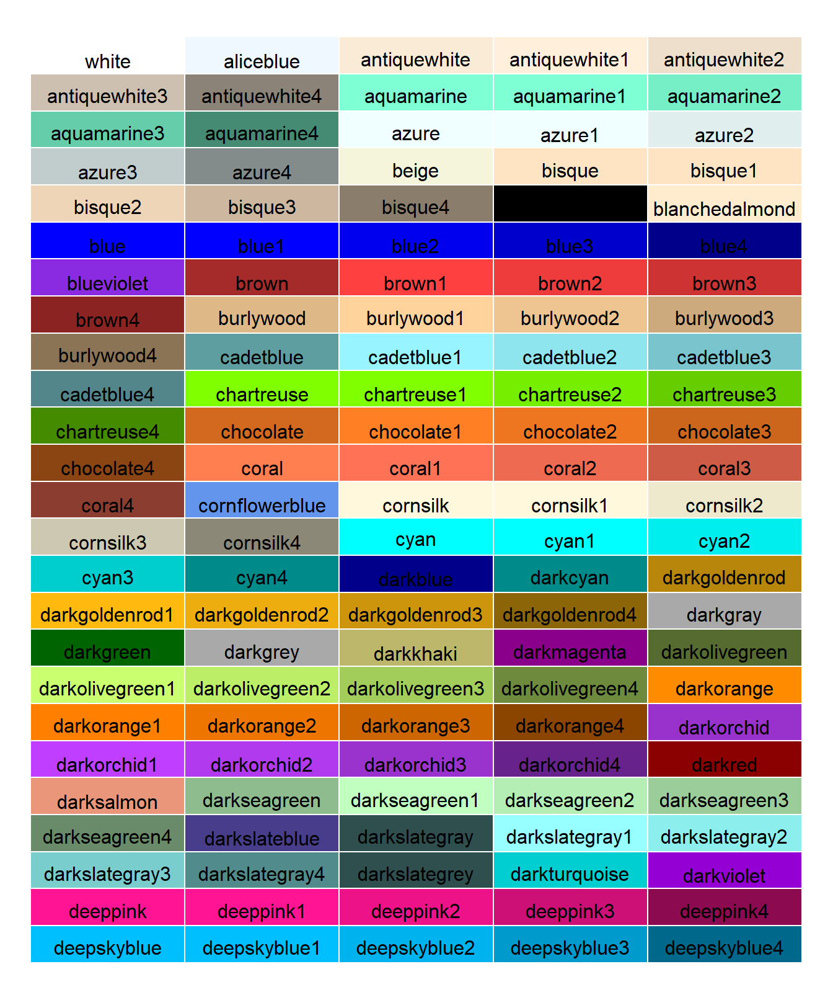
Figure 4.35: Tabla con una selección de colores con sus nombre asociados
otra forma de definir los colores es a través de su nivel de rojo (R), verde (G),
y azul (B), así como un valor alpha (opcional) que indica su transparencia cuando se superpone a otras
figuras ya pintadas. Cada componente se mueve entre valores 0 y 1. Por ejemplo rgb(1.,0.,0.) sería el color rojo y rgb(0.,0.,1.,0.9) sería el color azul con una ligera transparencia.
A cada elemento geométrico dibujable de ggplot le podemos asignar colores
utilizando los atributos color (color del objeto geométrico) y fill (color de relleno interior de la forma). Además, la asignación puede ser automática o manual. Veamos algunos ejemplos con un diagrama
de barras
owid_country |> # países OWID
group_by(continent) |> # agrupamos por continente
summarise(population=sum(population)) |> # sumamos población
ggplot(aes(x=continent,y=population)) + # sin fill: un solo color
geom_col(fill="lightblue",color="black") # relleno azul, borde negro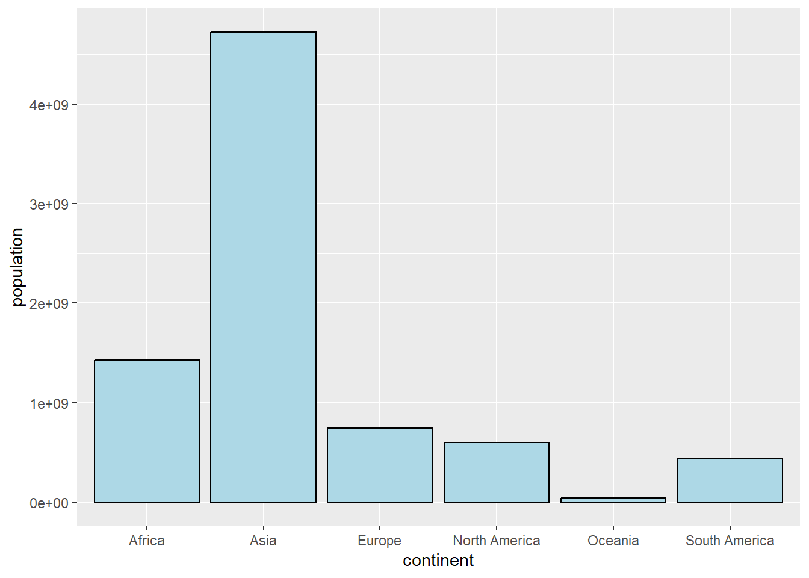
Figure 4.36: Diagrama de barras definiendo colores en geom_bar
owid_country |> # países OWID
group_by(continent) |> # agrupamos por continente
summarise(population=sum(population)) |> # sumamos población
ggplot(aes(x=continent,y=population,fill=continent)) + # color automático por continente
geom_col() + # barras
theme(legend.position = "none") # sin leyenda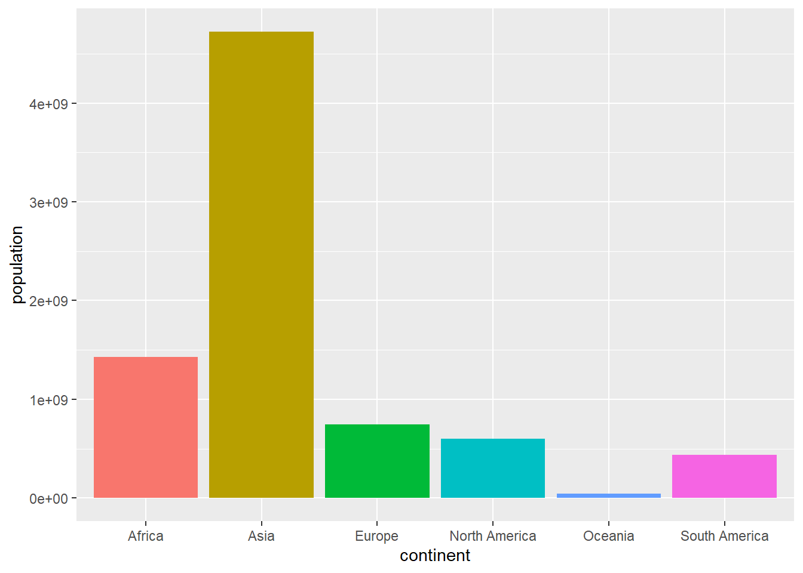
Figure 4.37: Diagrama de barras con colores generados automáticamente en el aes de ggplot
owid_country |> # países OWID
group_by(continent) |> # agrupamos por continente
summarise(population=sum(population)) |> # sumamos población
ggplot(aes(x=continent,y=population,fill=continent)) + # color por continente
geom_col() + # barras
scale_fill_manual(values = c("white","black","blue","red","green","yellow")) + # colores a mano
theme(legend.position = "none") # sin leyenda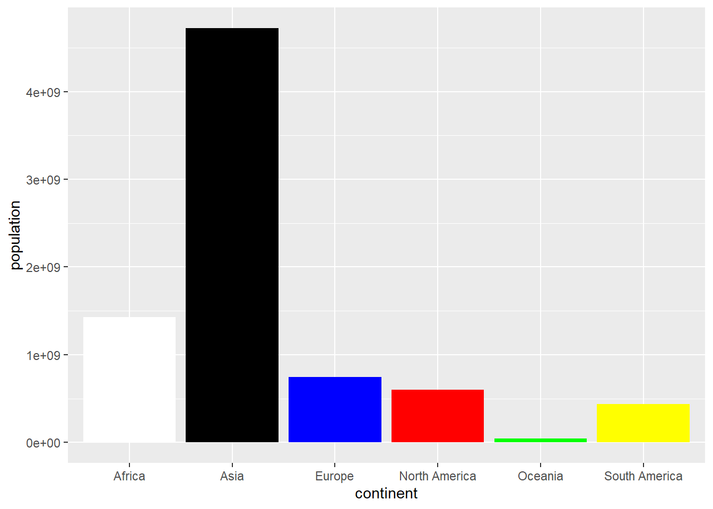
Figure 4.38: Diagrama de barras con colores asignados manualmente usando scale_fill_manual
Otra forma de definir colores es usando paletas. La librería RColorBrewer suministra las siguientes paletas de colores:
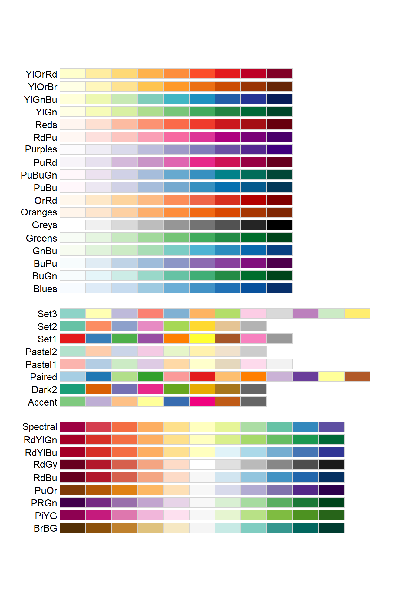
Figure 4.39: Paletas de colores de la librería RColorBrewer
Podemos distinguir 3 tipos de paletas :
Paletas de un solo color con luminosidad decreciente : el color se mantiene pero disminuye su luminosidad a lo largo de la paleta.
Paletas divergentes : la luminosidad y color no siguen un patrón progresivo.
Paletas con una transición entre dos colores : la paleta empieza con un color oscuro que se va aclarando hasta llegar a la mitad de la tabla, después cambia de color y se va oscureciendo progresivamente.
Veamos como se aplican al gráfico estas paletas con la función scale_fill_brewer:
owid_country |> # países OWID
group_by(continent) |> # agrupamos por continente
summarise(population=sum(population)) |> # sumamos población
ggplot(aes(x=continent,y=population,fill=continent)) + # color por continente
geom_col() + # barras
scale_fill_brewer(palette = "Paired") + # paleta RColorBrewer
theme(legend.position = "none") # sin leyenda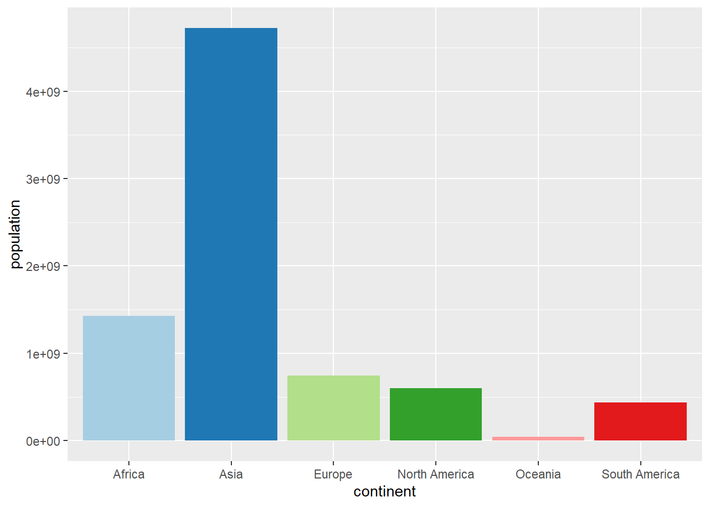
Figure 4.40: Diagrama de barras con colores usando scale_fill_brewer
Las paletas con colores progresivos son especialmente adecuadas cuando asociamos un color a un valor numérico, de tal forma que queremos que el color cambie progresivamente en función del valor numérico. Una aplicación de esto la hemos visto en los heatmaps.
Ampliar el número de colores de una paleta divergente
Como vemos, el máximo número de colores que ofrecen las paletas divergentes de RColorBrewer es 12. Si necesitamos dibujar más objetos hay que ampliar la paleta, y aquí conviene evitar un error muy extendido: no interpolar una paleta divergente. La interpolación (colorRampPalette) construye los colores intermedios recorriendo el camino que va de uno a otro, y eso tiene sentido en una paleta secuencial, donde los colores están ordenados; pero en una divergente los colores no guardan ningún orden entre sí, así que interpolar genera tonos intermedios muy parecidos entre ellos, que es justo lo contrario de lo que buscamos.
Podemos comprobarlo midiendo la distancia perceptual mínima entre los colores de una paleta, es decir, cuánto se diferencian a la vista los dos colores más parecidos que contiene. Se calcula pasando los colores al espacio CIE Lab, diseñado para que las distancias se correspondan con las diferencias que percibe el ojo humano; por debajo de un valor de unas 2,3 unidades, dos colores resultan prácticamente indistinguibles:
# distancia perceptual mínima entre colores (espacio CIE Lab)
distancia_minima <- function(colores){
lab <- t(apply(t(col2rgb(colores)/255), 1, function(x) # a espacio Lab
convertColor(matrix(x, nrow = 1), from = "sRGB", to = "Lab")))
d <- as.matrix(dist(lab)) # distancias entre todos los pares
diag(d) <- Inf # ignoramos color consigo mismo
min(d) # el par más parecido
}
set.seed(42) # reproducibilidad
paleta_polychrome <- as.character( # paleta divergente de 20 colores
Polychrome::createPalette(20, seedcolors = c("#8DD3C7", "#FB8072", "#80B1D3")))
tibble( # comparamos 4 paletas
paleta = c("Set3 original (12 colores)",
"Set3 interpolada a 20 con colorRampPalette",
"20 colores con scales::hue_pal()",
"20 colores con Polychrome::createPalette()"),
distancia_minima = c(distancia_minima(brewer.pal(12, "Set3")),
distancia_minima(colorRampPalette(brewer.pal(12, "Set3"))(20)),
distancia_minima(scales::hue_pal()(20)),
distancia_minima(paleta_polychrome))
)## # A tibble: 4 × 2
## paleta distancia_minima
## <chr> <dbl>
## 1 Set3 original (12 colores) 18.2
## 2 Set3 interpolada a 20 con colorRampPalette 2.76
## 3 20 colores con scales::hue_pal() 14.7
## 4 20 colores con Polychrome::createPalette() 25.6La paleta interpolada queda muy por debajo del umbral de percepción: contiene colores que el ojo no distingue, de modo que el gráfico deja de cumplir su función.
Conviene detenerse en la comparación entre las dos alternativas, porque enseña a no fiarse de un único número. scales::hue_pal() —la función que ggplot2 usa por defecto, incluida en tidyverse— reparte los colores uniformemente por el círculo de tonos y multiplica por cinco la distancia mínima de la paleta interpolada. Y, sin embargo, con 20 categorías el resultado sigue sin ser bueno: como mantiene constantes la luminosidad y la saturación y solo hace girar el tono, los veinte colores se perciben como un degradado de arcoíris en el que cada barra se parece a sus vecinas. La distancia mínima mide el par más parecido de toda la paleta, pero no capta que los colores estén ordenados formando un continuo.
Por eso usaremos Polychrome::createPalette(), que genera los colores buscando explícitamente que estén lo más separados posible en las tres dimensiones del espacio perceptual —tono, luminosidad y saturación—, partiendo de unos colores semilla. El precio es que los colores resultantes son más saturados y forman un conjunto menos armonioso que Set3; a cambio, cada categoría queda inconfundible, que es exactamente lo que se le pide a una paleta divergente.
NúmeroDeColores <- 20
owid_country |>
slice_max(population, n = NúmeroDeColores) |> # 20 países más poblados
arrange(desc(location)) |> # orden alfabético, no por población
mutate(location = factor(location, levels = location)) |> # fijamos ese orden
ggplot(aes(x = location, y = population, fill = location)) + # color por país
geom_col() + # barras
scale_fill_manual(values = paleta_polychrome) + # paleta de 20 colores
coord_flip() + # barras horizontales
theme(legend.position = "none") # sin leyenda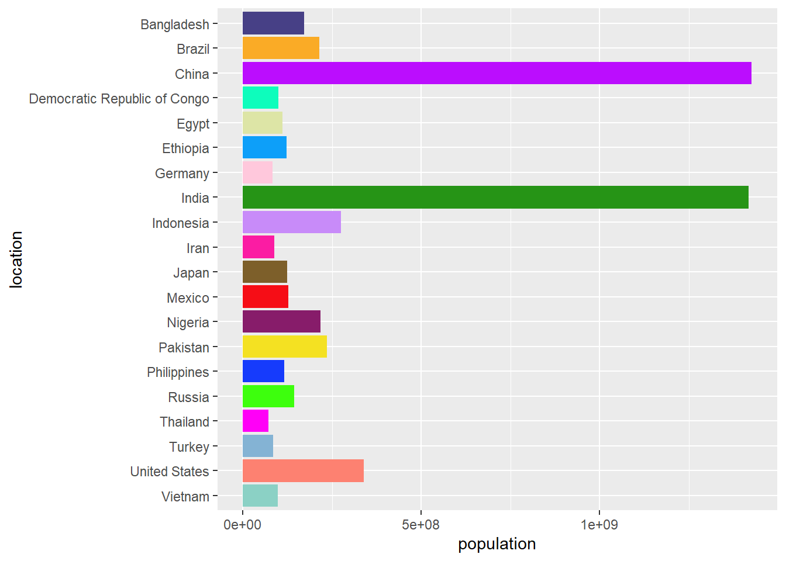
Figure 4.41: Diagrama de barras con una paleta divergente de 20 colores generada con Polychrome::createPalette()
Nótese que las barras no se ordenan por población, sino alfabéticamente. Ordenarlas por magnitud sugeriría visualmente una escala creciente, y esa es la lectura que corresponde a una paleta secuencial, no a una divergente: aquí el color solo sirve para distinguir países, no para codificar ninguna cantidad.
El color se asigna con scale_fill_manual, no dentro de aes()
Un error fácil de cometer es pasar el vector de colores directamente a la estética, escribiendo aes(fill = mi_paleta). Eso no aplica la paleta: aes() espera el nombre de una variable de los datos con la que agrupar, así que ggplot interpreta ese vector de códigos de color como si fuera una variable categórica más y le asigna… sus propios colores por defecto. El gráfico se dibuja sin error, pero con una paleta distinta de la que se pretendía.
La forma correcta es la del ejemplo anterior: mapear la estética a la variable (aes(fill = location)) y declarar los colores en una escala aparte, con scale_fill_manual(values = ...).
Escalas de color accesibles (viridis)
Un aspecto importante en la visualización profesional es la accesibilidad: aproximadamente el 8% de los hombres y el 0.5% de las mujeres tienen algún tipo de daltonismo. La familia de escalas viridis está diseñada para ser perceptualmente uniforme y legible por personas con deficiencias en la visión del color. Además, se imprime correctamente en blanco y negro:
owid_country |> # países OWID
ggplot(aes(x = gdp_per_capit, y = life_expectancy, color = continent)) + # color por continente
geom_point(size = 2) + # puntos
scale_x_continuous(transform = 'log2') + # eje x logarítmico
scale_color_viridis_d() + # _d discreta, _c continua
labs(x = "PIB per cápita (escala log)", y = "Esperanza de vida") # títulos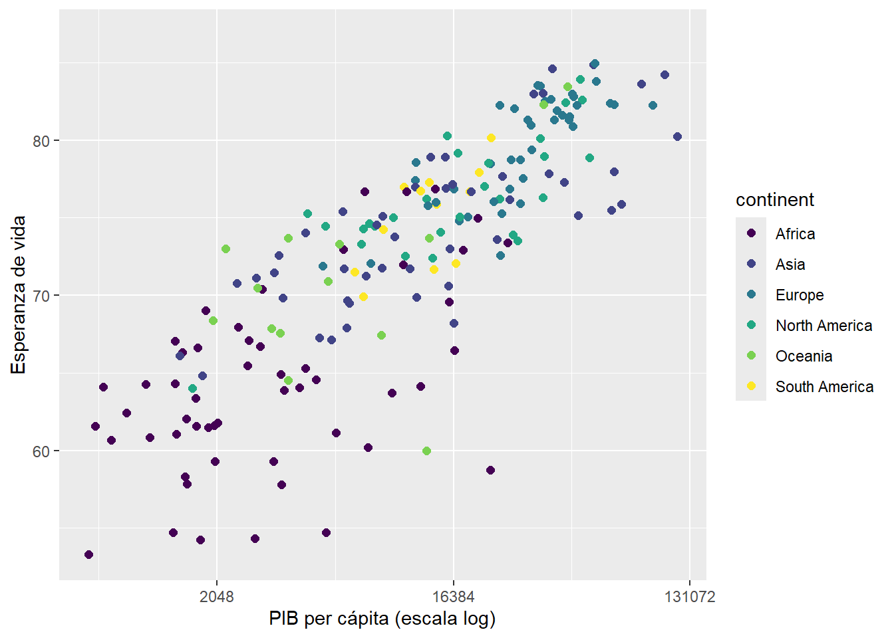
Figure 4.42: Diagrama de dispersión usando la escala de color viridis accesible para daltónicos
Las funciones scale_color_viridis_d() (para variables discretas) y scale_color_viridis_c() (para variables continuas) están incluidas en ggplot2 y no requieren librerías adicionales. Para rellenos se usan scale_fill_viridis_d() y scale_fill_viridis_c(). Se recomienda su uso siempre que el gráfico vaya a ser publicado o compartido con audiencias diversas.
4.19 Themes
El diseño general de la salida de un gráfico de ggplot se controla a través de la capa theme. Podemos modificar todos los atributos por
defecto de diseño de salida usando diferentes themes. De hecho hay paquetes en R dedicados exclusivamente
al diseño de themes. Para ilustrar esto con un ejemplo, utilizaremos el theme theme_bw en
un gráfico :
owid_country |> # países OWID
ggplot(aes(x=gdp_per_capit,y=life_expectancy,color=continent)) + # color por continente
geom_point() + # puntos
theme_bw() + # tema blanco y negro
scale_x_continuous(transform = 'log2') + # eje x logarítmico
labs(title="Distribución, por continentes, del PIB por habitante ",x="gdp_per_capit", y = "life_expectancy") # títulos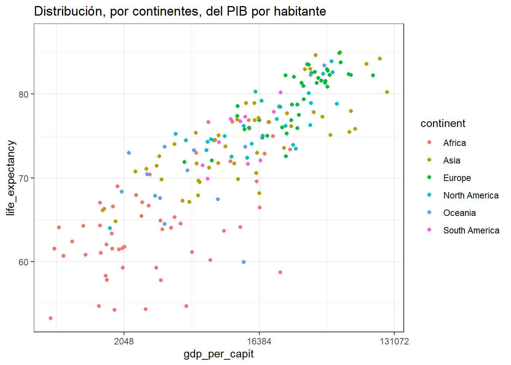
Figure 4.43: Usando el theme theme_bw
Además de definir un theme general para el gráfico, podemos controlar
los atributos individuales del theme, añadiendo al gráfico una capa theme adicional.
A continuación se muestran algunos atributos que se pueden configurar con la capa
theme
owid_country |> # países OWID
ggplot(aes(x=gdp_per_capit,y=life_expectancy,color=continent)) + # color por continente
geom_point() + # puntos
scale_x_continuous(transform = 'log2') + # eje x logarítmico
theme(
panel.background = element_rect( fill = "ivory", # color de fondo
color = "black", # color del borde
linewidth = 2), # grosor borde
panel.grid = element_line( color = "blue", # color cuadrícula
linewidth = 0.5, # grosor cuadrícula
linetype = 2), # tipo línea
axis.title.y = element_blank(), # sin título eje y
axis.text.x = element_text(angle = 45,hjust=1), # ticks inclinados
legend.position="none", # sin leyenda
text = element_text(size = 20) # tamaño de letra
)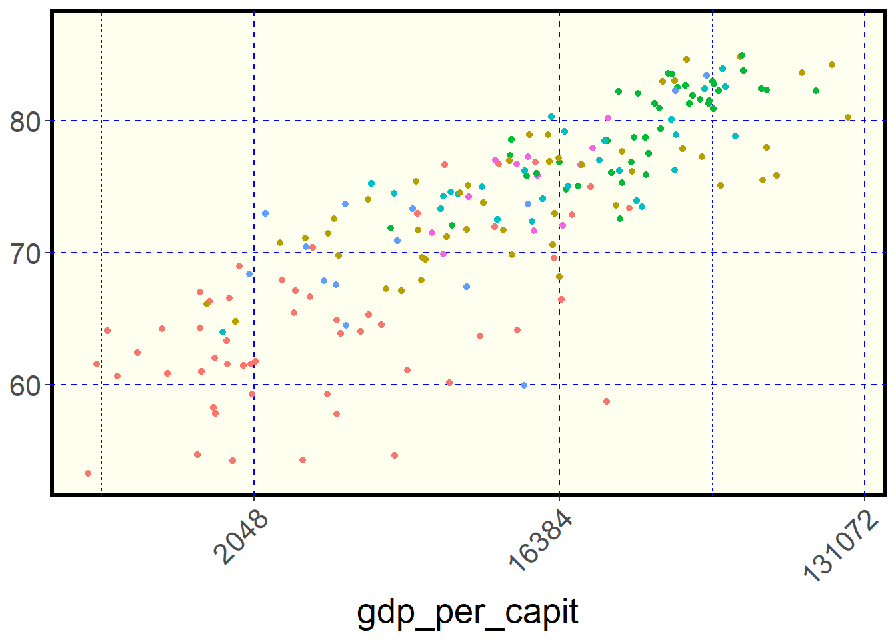
Figure 4.44: Algunas opciones de theme
Si queremos modificar el tema por defecto en todo el documento podemos poner la siguiente instrucción al principio del documento
4.19.1 Diseño títulos y ejes
owid_country |> # países OWID
ggplot(aes(x=gdp_per_capit,y=life_expectancy,color=continent)) + # color por continente
geom_point() + # puntos
labs( title = "Mi Título", # título y subtítulo
subtitle = "Mi Subtítulo",
x= "Título eje x", # títulos de los ejes
y= "Título eje y"
) +
scale_x_continuous(transform = 'log2', # eje x logarítmico
n.breaks = 10, # número de cortes
) +
scale_y_continuous(n.breaks = 10) # número de cortes eje y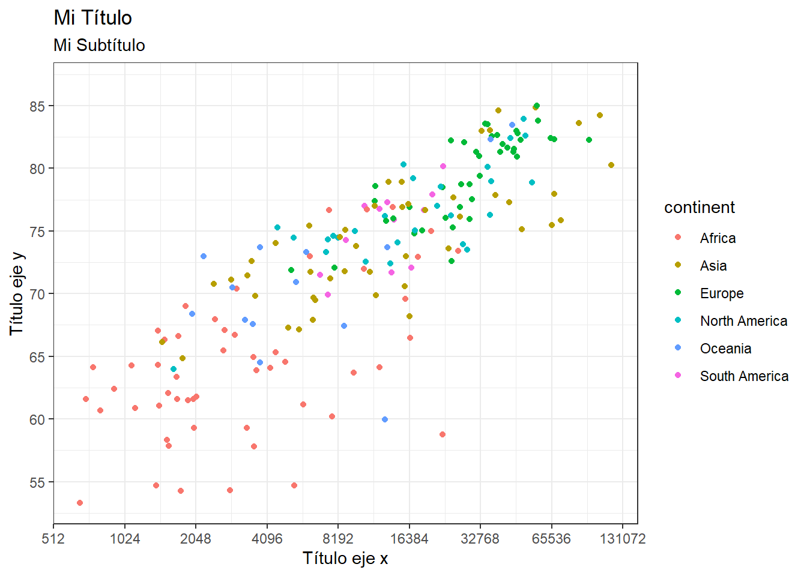
coord_cartesian vs. ylim para hacer zoom
Cuando queremos hacer zoom en una región del gráfico, es importante distinguir entre dos métodos:
scale_y_continuous(limits=...)oylim()eliminan los datos fuera del rango antes de calcular estadísticas. Esto afecta a funciones comogeom_smoothque recalculan la regresión solo con los datos visibles.coord_cartesian(ylim=...)hace zoom sin eliminar datos, solo ajusta la ventana de visualización. Las estadísticas se calculan con todos los datos.
p1 <- owid_country |>
ggplot(aes(x = gdp_per_capit, y = life_expectancy)) + # PIB vs. esperanza de vida
geom_point(alpha = 0.5) + # puntos semitransparentes
geom_smooth(method = lm, se = FALSE, color = "red") + # recta de regresión
scale_x_continuous(transform = 'log2') + # eje x logarítmico
scale_y_continuous(limits = c(65, 85)) + # recorta y elimina datos fuera del rango
labs(title = "scale_y_continuous (elimina datos)")
p2 <- owid_country |>
ggplot(aes(x = gdp_per_capit, y = life_expectancy)) + # PIB vs. esperanza de vida
geom_point(alpha = 0.5) + # puntos semitransparentes
geom_smooth(method = lm, se = FALSE, color = "red") + # recta de regresión
scale_x_continuous(transform = 'log2') + # eje x logarítmico
coord_cartesian(ylim = c(65, 85)) + # solo zoom, sin eliminar datos
labs(title = "coord_cartesian (solo zoom)")
wrap_plots(p1, p2, ncol = 2) # los combinamos lado a lado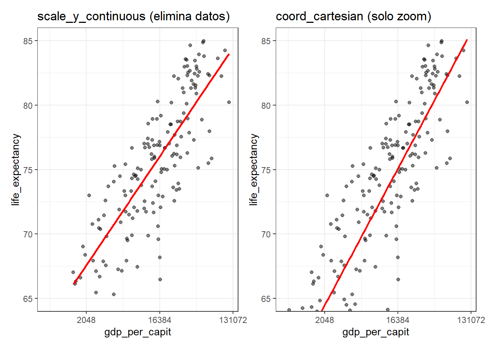
Figure 4.45: Comparación entre ylim (izquierda, datos eliminados) y coord_cartesian (derecha, solo zoom)
Obsérvese cómo la recta de regresión cambia en el gráfico de la izquierda (porque se han eliminado los puntos fuera del rango al usar scale_y_continuous(limits=...)) mientras que en el de la derecha mantiene su pendiente original. En general, se recomienda usar coord_cartesian para hacer zoom.
4.20 Un gráfico pulido de referencia
La mayoría de los gráficos de este capítulo se han dejado deliberadamente sin cuidar la estética, para centrar la atención en el elemento geométrico. A modo de contraste, mostramos aquí cómo queda un gráfico cuando se le aplican todas las herramientas de diseño vistas (título y subtítulo informativos, etiquetas de ejes, escala logarítmica, color con significado, etiquetas de puntos sin solapamiento, tema y anotación de la fuente). Este es el nivel de acabado al que conviene aspirar en un informe o presentación:
owid_country |>
filter(!is.na(gdp_per_capit) & !is.na(life_expectancy)) |> # sin NA
ggplot(aes(x = gdp_per_capit, y = life_expectancy, color = continent)) + # color por continente
geom_point(aes(size = population), alpha = 0.7) + # tamaño = población
geom_text_repel( # etiquetamos solo los países más poblados
data = ~ dplyr::filter(.x, population > 1.5e8),
aes(label = location), size = 3, color = "grey30", max.overlaps = 20
) +
scale_x_continuous(transform = 'log2', # eje x logarítmico
labels = scales::label_number(scale_cut = scales::cut_short_scale())) + # etiquetas abreviadas
scale_color_viridis_d() + # paleta accesible
scale_size_continuous(range = c(1, 10), guide = "none") + # rango de tamaños, sin leyenda
labs( # títulos y fuente
title = "Esperanza de vida frente a PIB per cápita",
subtitle = "Cada punto es un país; el tamaño representa su población",
x = "PIB per cápita (escala logarítmica)",
y = "Esperanza de vida (años)",
color = "Continente",
caption = "Fuente: Our World in Data (OWID)"
) +
theme_minimal(base_size = 12) + # tema limpio
theme(plot.title = element_text(face = "bold")) # título en negrita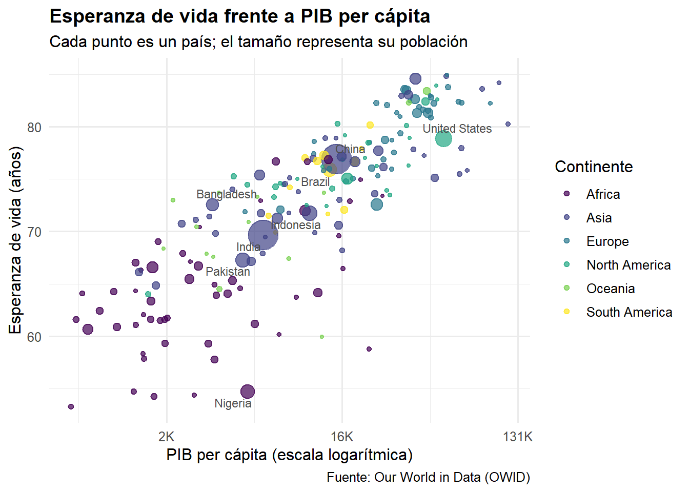
Figure 4.46: Ejemplo de gráfico pulido, listo para un informe
Compárese con los gráficos previos: la misma información, pero comunicada de forma mucho más clara y profesional.
4.21 Una tabla pulida de referencia: gt
El mismo criterio de acabado profesional se aplica a las tablas. A lo largo del libro usamos knitr::kable(), que es perfectamente adecuado para tablas simples (y en el capítulo de visualización dinámica veremos DT para tablas interactivas). Cuando una tabla es una pieza central de un informe, el estándar actual para tablas estáticas con calidad de publicación es la librería gt, desarrollada por el equipo de Posit. Su filosofía es análoga a la de ggplot2: la tabla se construye por capas (cabecera, etiquetas de columnas, formato de números, nota de fuente):
tabla <- owid_country |>
filter(!is.na(life_expectancy)) |> # sin NA
slice_max(life_expectancy, n = 10) |> # los 10 países con más esperanza de vida
select(location, continent, life_expectancy, gdp_per_capit) |> # columnas a mostrar
gt() |> # tabla gt
tab_header( # título y subtítulo
title = "Los 10 países con mayor esperanza de vida",
subtitle = "Indicadores básicos por país"
) |>
cols_label( # renombramos las columnas
location = "País",
continent = "Continente",
life_expectancy = "Esperanza de vida (años)",
gdp_per_capit = "PIB per cápita ($)"
) |>
fmt_number(columns = life_expectancy, decimals = 1) |> # 1 decimal
fmt_number(columns = gdp_per_capit, decimals = 0) |> # sin decimales
tab_source_note("Fuente: Our World in Data (OWID)") # nota de fuente
tabla| Los 10 países con mayor esperanza de vida | |||
| Indicadores básicos por país | |||
| País | Continente | Esperanza de vida (años) | PIB per cápita ($) |
|---|---|---|---|
| Monaco | Europe | 86.8 | NA |
| San Marino | Europe | 85.0 | 56,861 |
| Hong Kong | Asia | 84.9 | 56,055 |
| Japan | Asia | 84.6 | 39,002 |
| Macao | Asia | 84.2 | 104,862 |
| Cayman Islands | North America | 83.9 | 49,903 |
| Switzerland | Europe | 83.8 | 57,410 |
| Andorra | Europe | 83.7 | NA |
| Singapore | Asia | 83.6 | 85,535 |
| Spain | Europe | 83.6 | 34,272 |
| Fuente: Our World in Data (OWID) | |||
Como con los gráficos, la regla práctica es: kable() para tablas de apoyo rápidas, gt cuando la tabla es un resultado que se quiere presentar con el mismo cuidado que un gráfico pulido.
Color condicional en gt: la filosofía de capas
La tabla tabla que construimos en la sección anterior no queda cerrada al mostrarla: es un objeto vivo al que se le pueden seguir encadenando capas, igual que a un ggplot. Vamos a añadirle dos capas más con data_color(), una por cada columna numérica, para colorear cada celda según su valor con un degradado:
tabla |>
data_color(
columns = life_expectancy,
palette = "Blues" # degradado de un solo color: cuanto más oscuro, mayor esperanza de vida
) |>
data_color(
columns = gdp_per_capit,
palette = "Oranges" # degradado INDEPENDIENTE para la otra columna numérica
)| Los 10 países con mayor esperanza de vida | |||
| Indicadores básicos por país | |||
| País | Continente | Esperanza de vida (años) | PIB per cápita ($) |
|---|---|---|---|
| Monaco | Europe | 86.8 | NA |
| San Marino | Europe | 85.0 | 56,861 |
| Hong Kong | Asia | 84.9 | 56,055 |
| Japan | Asia | 84.6 | 39,002 |
| Macao | Asia | 84.2 | 104,862 |
| Cayman Islands | North America | 83.9 | 49,903 |
| Switzerland | Europe | 83.8 | 57,410 |
| Andorra | Europe | 83.7 | NA |
| Singapore | Asia | 83.6 | 85,535 |
| Spain | Europe | 83.6 | 34,272 |
| Fuente: Our World in Data (OWID) | |||
Las dos llamadas a data_color() son capas independientes: cada una calcula su degradado a partir del rango de valores de su propia columna, sin que una interfiera con la otra ni con las capas anteriores (cabecera, etiquetas, formato de los números). Es la misma filosofía de ggplot2 —el objeto separa los datos de las instrucciones de construcción, y cada función añadida se limita a apilar una instrucción más—, aplicada aquí a una tabla en lugar de a un gráfico.
4.22 Exportar gráficos con ggsave
Para guardar un gráfico en un fichero usamos la función ggsave. Esta función guarda, por defecto, el último gráfico generado, o el gráfico que le pasemos como argumento. Soporta múltiples formatos: PNG (para web), PDF (para publicaciones), SVG (vectorial escalable), JPEG, TIFF, entre otros:
# Guardar el último gráfico generado
ggsave("mi_grafico.png", width = 8, height = 5, dpi = 300)
# Guardar en PDF (ideal para publicaciones, escalable sin pérdida)
ggsave("mi_grafico.pdf", width = 8, height = 5)
# Guardar un gráfico almacenado en una variable
p <- ggplot(owid_country, aes(x = gdp_per_capit, y = life_expectancy)) + geom_point()
ggsave("dispersion.png", plot = p, width = 8, height = 5, dpi = 300)Los parámetros width y height controlan las dimensiones del gráfico en pulgadas y dpi la resolución (300 dpi es estándar para impresión, 72-150 dpi para pantalla). Para presentaciones o informes donde los gráficos se van a ampliar, es recomendable usar formatos vectoriales como PDF o SVG.
Referencias
[ClMc84] Cleveland, William S. and Robert McGill. Graphical Perception: Theory, Experimentation, and Application to the Development of Graphical Methods, Journal of the American Statistical Association, 531-554, 1984.
[Ka20] Rob Kabacoff. Data Visualization with R, 2020.
[Rc] R CODER. R CHARTS.
[He19] Kieran Healy. Data Visualization, Princeton University Press, 2019.
[Ho] Yan Holtz. The R Graph Gallery.
[Wil05] Wilkinson, Leland. The Grammar of Graphics, 2ª ed., Springer, 2005.
[Wi10] Wickham, Hadley. A Layered Grammar of Graphics, Journal of Computational and Graphical Statistics, 3–28, 2010.
[WiÇeGa23] Wickham, Hadley, Mine Çetinkaya-Rundel and Garrett Grolemund. R for Data Science (2e), O’Reilly Media, 2023.
[Wil19] Claus O. Wilke. Fundamentals of Data Visualization, O’Reilly, 2019.